1. Kaynak durumu, kanıtlar ve hocanın tarzı
- Fotoğraflarda güvenilir, ardışık sayfa numaraları yok. Bu yüzden sondaki envanterde dosyalara K01–K26 kodları verildi. Bunlar orijinal sayfa numarası değildir.
- K12 ve K21 aynı defter sayfasının iki fotoğrafıdır. Dolayısıyla 26 fotoğrafı, 26 farklı içerik sayfası olarak saymak doğru olmaz. Diğer sayfalarda da tekrarlanan anlatımlar var.
- Bazı fotoğrafların üst kenarlarında önceki satırlar kesik. Sınav fotoğrafının sağ kenarı da kesik. Okunabilen ana içerik kullanıldı; görünmeyen ifadeler tamamlanmış bir alıntı gibi sunulmadı.
- Notlar yalnızca işletim sistemi konularından oluşmuyor: makine öğrenmesi, ağ güvenliği ve otomata hakkında kısa parçalar da var. Bunlar düşük öncelikli ayrı ders olarak korunmuştur.
- Notlardaki tarihler ile sınavın tarihi aynı döneme ait görünmüyor. Fotoğraftaki sınav tarihi 03.11.2025, bazı defter tarihleri 2026. Aynı kapsamın tekrar edileceği garanti edilemez.
Görünen üç sorudan çıkarılabilecekler
| Soru | Okunabilen istek | Ölçülen beceri | Kanıtın sınırı |
|---|---|---|---|
| 1 | 5 durumlu process state diagram çizimi ve transition'lar; 15 puan | Şemayı belleğinden kurma, okları adlandırma | Gelecek sınavda kesin çıkacağı anlamına gelmez |
| 2 | 4 thread, başlangıç değeri 2 olan semaphore; -2, 0, 1 değerlerini yorumlama | Tanımı verilen sayısal duruma uygulama | Sağ uç kesik; puanı güvenle okunmuyor |
| 3 | 1000 elemanlı diziyi 0–499 ve 500–999 olarak iki section/thread ile toplama; işler bitince toplamı yazdırma; 30 puan | Kod tamamlama, iş bölümü, bekleme, doğru indeks | Sağ uç kesik; OpenMP adı görünmüyor; “section” ifadesi OpenMP yorumunu güçlü biçimde destekliyor |
Tarz yorumu: Görünen sorular çoktan seçmeli değil, açık uçlu. “Çiziniz, geçişleri yazınız, yorumlayınız, kodu tamamlayınız” biçiminde. İngilizce teknik terimler Türkçe cümle içinde kullanılıyor. Kodun derlenebilmesi ve büyük/küçük harf duyarlılığı sınavın üst notunda vurgulanıyor. Bu nedenle rehberde şekil, adım izleme ve kod yazma birlikte çalıştırılıyor. Üç soru sınavın tamamı değildir; kalan sorular ve toplam konu dağılımı bilinmiyor.
2. Konu öncelik tablosu
Öncelik, çalışma zamanını dağıtır; çıkma olasılığının ölçülmüş yüzdesi değildir. “Yüksek” için doğrudan çıkmış soru veya onu çözmek için gerekli temel; “orta” için notlarda belirgin anlatım/ödev/soru vurgusu; “düşük” için kısa ayrıntı veya ders dışı görünen parça kanıtı kullanıldı.
| Öncelik | Konu | Dayanak | Rehber dersi |
|---|---|---|---|
| 🔴 | Beş süreç durumu ve altı geçiş | Çıkmış S1; K02, K13, K16'da tekrar | 3 |
| 🔴 | Semafor; negatif, sıfır ve pozitif değerler | Çıkmış S2; K18, K25 | 9 |
| 🔴 | İki section ile toplama, bekleme, indeksler | Çıkmış S3; thread temeli K06, K26 | 10 |
| 🔴 | Process–thread, ortak ve özel bellek | S2 ve S3'ün önkoşulu; birçok sayfada tekrar | 2, 6 |
| 🔴 | Race condition, critical section, mutual exclusion, atomic operation | Semafor ve doğru paralel kodun önkoşulu; K08, K14, K18 | 8 |
| 🔴 | Concurrency–parallelism, data/task parallelism | Paralel kodu anlamanın temeli; K05, K15 | 7 |
| 🟡 | PCB, context switch, ready/wait kuyrukları | Durum geçişleriyle bağlantılı, K02, K06, K16 | 4 |
| 🟡 | Oluşturma, sonlandırma, parent/child, suspension, swapping | Ayrı başlıklar; Notepad ödevi; K01, K03, K23 | 5 |
| 🟡 | ULT/KLT, many-to-one, one-to-one, many-to-many, kütüphaneler | Birçok sayfada karşılaştırma soruları var | 11 |
| 🟡 | Deadlock–livelock–starvation | Concurrency anlatımının ana kavramları | 12 |
| 🟡 | OS görevi, kernel/shell, user/kernel mode, OS hizmetleri | Temel ders çerçevesi; K04, K07, K10, K20 | 1 |
| 🟡 | Register, instruction cycle, assembly izleme, adres hesabı | Şekiller ve “hesaplama yapılacak” vurgusu | 13, 14 |
| 🟡 | Windows süreç API'leri, native/WOW64 | Numaralı API listesi ve bitlik ödevi | 15 |
| 🟡 | Authentication–authorization, RBAC/ABAC/ACL, tarayıcı izolasyonu | K09'da geniş anlatım; K11'de soru vurgusu | 16 |
| 🟢 | Ağ spoofing ayrıntıları | K24'ün bir bölümü; görünen sınavda kanıt yok | 17 |
| 🟢 | Boot/MBR, dosya yolları, terminal/console ayrıntıları | Temele yardımcı, doğrudan sınav kanıtı yok | 1, 13 |
| 🟢 | Random forest/bootstrap, Gaussian Naive Bayes, pumping lemma | Sayfa başı/sonu kısa parçalar; kapsam ilişkisi belirsiz | 18 |
Kapsam sınırı: Notlarda FCFS/SJF gibi CPU çizelgeleme algoritmalarının hesaplı anlatımı, Banker's algorithm, sayfa değiştirme algoritmaları veya CUDA anlatımı görülmüyor. İlk 3 haftanın yeni notlarında MPI tanımı bulunuyor; ayrıntılı MPI algoritması yok. Bunları hocanın işlediği ana konuymuş gibi eklemedim. Notlardaki time-out ve öncelik kavramları ise atlanmadı.
3. Çalışma rotası
Öncelik ile öğrenme sırası aynı şey değildir: semafordan önce süreç ve thread anlaşılmalıdır.
| Oturum | Süre önerisi | İçerik | Bitince yapacağın kontrol |
|---|---|---|---|
| 1 | 25 dk | Ders 1–2: CPU, OS, program/process, bellek | “Bekleyen process hâlâ process midir?” sorusunu açıklayabil |
| 2 | 30 dk | Ders 3–4: durum diyagramı, PCB | Beş durumu ve altı oku bakmadan çiz |
| 3 | 25 dk | Ders 5–6: yaşam döngüsü, thread | Ortak/özel bellek tablosunu yeniden kur |
| 4 | 25 dk | Ders 7–8: paralellik ve yarış | İki artırmanın nasıl bir artışa dönüştüğünü izle |
| 5 | 30 dk | Ders 9 ve çıkmış S2 | S=2'den başlayarak 4 wait'i hesapla |
| 6 | 35 dk | Ders 10 ve çıkmış S3 | İki section'lı kodu boş sayfaya yaz |
| 7 | 30 dk | Ders 11–12: modeller, ilerleme sorunları | ULT/KLT ve üç kilitlenme kavramını ayır |
| 8 | 35 dk | Ders 13–15: donanım, hesaplar, API | Adres ve register sorusu çöz |
| 9 | 25 dk | Ders 16–18: güvenlik ve tamamlayıcı parçalar | Kimlik/yetki ayrımını örnekle |
| 10 | 50 dk | Mini deneme + hata incelemesi | Yanlışını neden yaptığını bir cümleyle yaz |
Her oturumda: 10–15 dakika öğren, notu kapat, örnek soruyu çöz, cevabınla karşılaştır. Yanlışında tüm bölümü yeniden okumak yerine karıştırdığın ayrımı bul.
4. Sıfırdan konu anlatımları
Ders 1 — İşletim sistemi, kernel, shell ve hizmetler
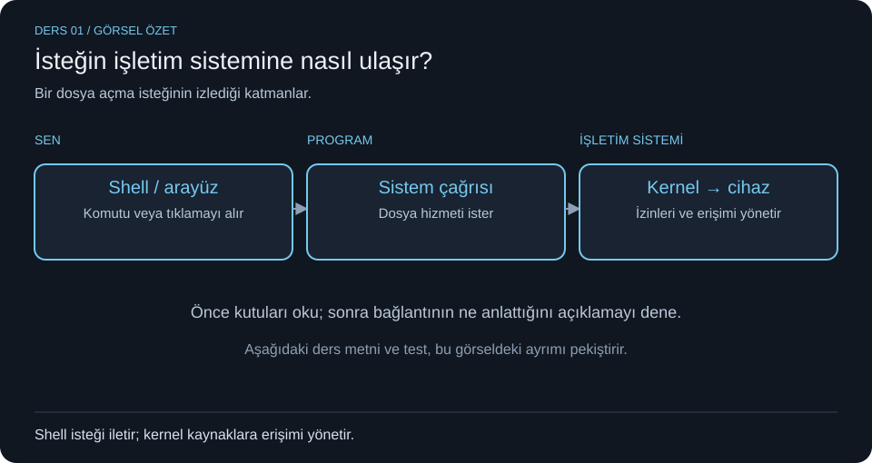
- Konu: Bilgisayardaki işleri kim yönetir? (K04, K07, K10, K20)
- Basit açıklama: CPU komutları işler; RAM o anda gereken kod ve verileri tutar; disk kalıcı saklama sağlar. İşletim sistemi (OS) uygulamalara CPU zamanı, bellek, dosya ve cihaz erişimi sağlar. Kernel, OS'nin temel yönetim işlerini yapan çekirdeğidir. Shell kullanıcının komutlarını alır. Notlardaki donanım → BIOS → OS → shell → kullanıcı zinciri bir katman/başlatma anlatımıdır; kullanıcı her işleminde BIOS'tan geçmez.
- Terimler: Operating system = işletim sistemi; kernel = çekirdek; shell = kabuk; resource = kaynak; system call = sistem çağrısı; user mode = kullanıcı kipi; kernel mode = çekirdek kipi; GUI = grafik kullanıcı arayüzü.
- Örnek: Bir editör dosya açmak istediğinde OS hizmeti kullanır. Uygulama isteği kullanıcı kipinde hazırlanır; dosya sistemine ilişkin çekirdek işi sistem çağrısıyla yapılır. “Dosya açınca bütün uygulama kernel olur” denmez.
- Sınav noktaları: OS hedefleri notta convenience (kullanım kolaylığı), efficiency (verimlilik), ability to evolve (gelişebilirlik). Hizmetler: program geliştirmeye ortam sağlama, program yürütme, I/O erişimi, dosyalara denetimli erişim, sisteme erişim, hata algılama/yanıt, accounting (kullanım kaydı). Ana yönetim alanları: süreç, bellek/sanal bellek, koruma/güvenlik, zamanlama/kaynaklar, sistem yapısı. Bash bir komut kabuğudur; Explorer Windows'un grafik kabuğu örneğidir. Terminal komut kabuğu ile aynı şey değildir: kabuk komutu yorumlar, terminal giriş/çıkış arayüzüdür. Console tarihsel olarak doğrudan bağlı sistem terminalidir; güncel kullanımda yazılımsal konsollar da vardır.
- Hatırlama: “CPU yapar, RAM tutar, OS paylaştırır, shell isteği alır.” User/kernel bir yetki ayrımıdır; 32/64 bit ayrımı değildir.
- Örnek soru ve çözüm: “CPU'yu ve dosya erişimlerini paylaşılabilir biçimde yöneten yapı shell midir?” Hayır. Kaynak yönetimi OS/kernel işidir. Shell, kullanıcıya bu hizmetleri çağırma arayüzü sunar.
Ders 2 — Program, process ve süreç belleği
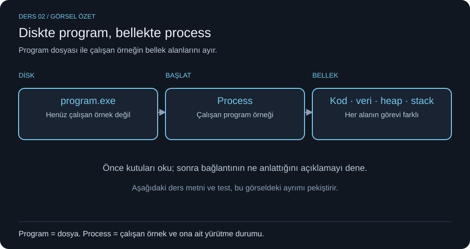
İlk 3 hafta / Miray notları — süreç temeli. Program dosyası ile çalışan örneği ayıralım.
- Program ve process farkı:
notepad.exediskteki program dosyasıdır. Başlatıldığında işletim sisteminin yönettiği çalışan örnek bir process (süreç) olur. İşletim sistemi bu örneğe CPU zamanı, bellek ve gerekli kaynakları sağlar. Süreç CPU'ya atanabilir bir yürütme birimidir; her an CPU üzerinde bulunması gerekmez. Girdi bekleyen Not Defteri de hâlâ bir süreçtir. - Aynı program, farklı örnekler: Not Defteri'ni iki kez başlatınca iki ayrı süreç oluşabilir. Program dosyası aynı olsa bile süreç kimlikleri ve çalışma durumları ayrı olabilir. Pencere sayısı tek başına süreç sayısını kesin göstermez; bir uygulama birden fazla pencereyi aynı süreçte de yönetebilir.
- Süreç yönetimi: İşletim sistemi süreç oluşturur ve sonlandırır; gerektiğinde askıya alır ve devam ettirir. Süreçler arası iletişim için de mekanizmalar sağlar. Bir sürecin oluşturulması, o anda CPU'da çalışmaya başlayacağını garanti etmez.
- Bellek alanlarını karıştırma: Text/code programın makine komutlarını, data global ve statik verileri, heap dinamik ayrılan belleği, stack ise fonksiyon çağrılarının bilgilerini ve otomatik yerel değişkenlerini temsil eder.
| Alan | İçinde ne bulunur? | Akılda kalacak örnek |
|---|---|---|
| Text / code | Çalıştırılabilir komutlar | hesapla fonksiyonunun makine kodu |
| Data | Global ve statik veriler | Global sayaç |
| Heap | Dinamik bellek tahsisi | Çalışırken ayrılan dizi |
| Stack | Çağrı çerçeveleri ve yerel değişkenler | Fonksiyonun dönüş bilgisi ve yerel sayacı |
Bellek şemasını oku: Fonksiyonun çağrı bilgisi stack'te, komutları text alanındadır. Notta heap ile stack'in büyüme yönleri çizilmiş; bu şema her sistemin fiziksel bellek yerleşimini birebir vermez. Burada önemli olan alanların görevleridir.
Linux'ta süreçleri görmek: ps aux veya ps -ef çalışan süreçler hakkında listeleme yapar. ps burada process status ile ilişkilidir; program derleme komutu değildir.
- Process ve thread ilişkisi: Thread, sürecin içindeki yürütme akışıdır. Çalışan bir süreçte en az bir ana akış düşünülür; ihtiyaca göre başka thread'ler oluşturulabilir. Ayrıntısı Ders 6'da.
- Kendini kontrol et: “Diskte duran dosya process midir?” Hayır, programdır. “Çalışırken I/O bekleyen örnek process olmaktan çıkar mı?” Hayır, yalnızca o sırada CPU komutu yürütmez.
- Hatırlama: Program = dosya/tarif. Process = işletim sisteminin yönettiği çalışan örnek. Text = kod; stack = çağrı geçmişi.
Ders 3 — Beş durumlu süreç diyagramı
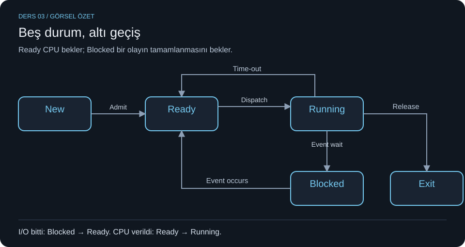
İlk 3 hafta / Miray notları — process state diagram. Bir sürecin hangi nedenle çalıştığını veya beklediğini takip ediyoruz.
- New: İşletim sistemi yeni süreci oluşturur ve gerekli yönetim yapılarını hazırlar.
- Ready: Süreç çalışmaya hazırdır; CPU'ya atanmayı bekler. Eksik olan bir dosya verisi değil, işlemci zamanıdır.
- Running: Süreç CPU üzerinde komut yürütür.
- Blocked / waiting: Devam edebilmek için bir olayın veya I/O işleminin tamamlanmasını bekler. CPU boş olsa bile beklediği veri gelmeden ilerleyemez.
- Exit / terminated: Sürecin yürütülmesi sona ermiştir.
Bir akışı takip et: Editör açılır → hazır olur → CPU verilince çalışır → disk okumasını bekler → okuma bitince yeniden hazır olur → tekrar CPU verilince çalışır → işi bitince sonlanır.
New --admit--> Ready --dispatch--> Running --release--> Exit
^ |
+-----time-out-------+
^ |
| event wait
event occurs v
+---------------- Blocked
| Kaynak | Hedef | Geçiş | Neden? |
|---|---|---|---|
| New | Ready | Admit | Süreç çalıştırılmak üzere kabul edilir |
| Ready | Running | Dispatch | Sürece CPU verilir |
| Running | Ready | Time-out | Zaman dilimi biter; yeniden CPU sırası bekler |
| Running | Blocked | Event wait | Bir olay veya I/O sonucunu beklemeye başlar |
| Blocked | Ready | Event occurs | Beklediği olay tamamlanır |
| Running | Exit | Release | Yürütme sona erer |
En kritik ayrım: Blocked → Running diye doğrudan ok çizme. I/O'nun bitmesi süreci Ready yapar; CPU'ya atanması ayrı bir adımdır. Time-out CPU süresinin dolmasıdır; event wait bir olay beklemektir.
Scheduler ve dispatcher: Scheduler hangi hazır sürecin seçileceğine karar verir. Dispatcher seçilen sürecin CPU'da çalışması için geçişi gerçekleştirir. Ready queue, çalışmaya hazır olup CPU tahsisini bekleyen süreçlerin mantıksal kuyruğudur.
Soru: “Bir süreç oluşturuldu, hemen Running olur mu?” Hayır. Oluşturulma ve CPU'ya atanma farklı aşamalardır. “Disk okuması tamamlandı, nereye geçer?” Ready; ardından dispatch ile Running.
Ders 4 — PCB, kuyruklar, scheduler ve context switch
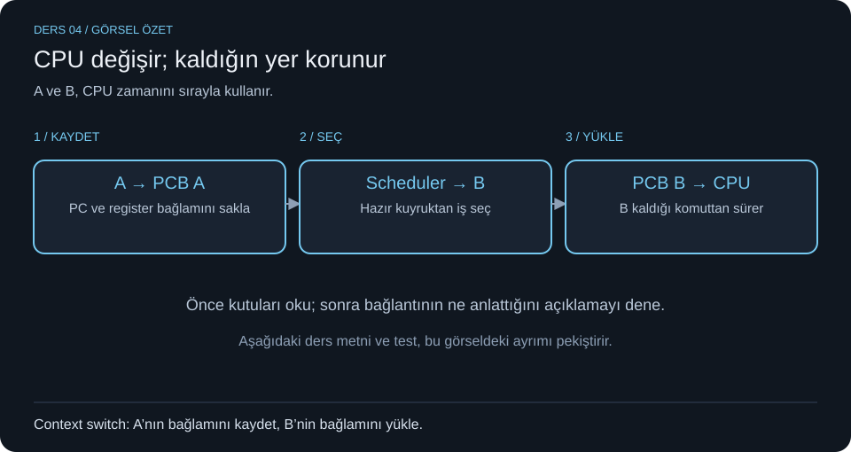
İlk 3 hafta / Miray notları — işletim sistemi kaldığın yeri nasıl hatırlar?
- PCB nedir? Process Control Block, işletim sisteminin bir süreci yönetirken kullandığı kayıt yapısıdır. Yalnızca süreç numarasını değil, yürütmeye devam etmek için gereken durumu da tutar.
| PCB bilgisi | Anlamı | Karıştırma |
|---|---|---|
| Process ID / PID | Sürecin kimlik numarası | Komut adresi değildir |
| Process state | Ready, Running, Blocked gibi durum | Öncelikle aynı şey değildir |
| Priority | CPU planlamasında kullanılan öncelik | Her sistemde sayı yönü aynı olmak zorunda değildir |
| Program counter / PC | Devam edilecek komutun konumu | Kodun kendisi değildir |
| Memory pointers | Bellek alanlarına ilişkin adres/yönetim bilgileri | Tek başına bütün bellek içeriği değildir |
| CPU registers ve diğer bilgiler | Yazmaç bağlamı, zamanlama ve kaynak yönetimi bilgileri | Kaldığın hesabı sürdürmeye yardım eder |
- Context switch adım adım: P1 çalışırken P2'ye geçilecekse önce P1'in gerekli yürütme bağlamı kaydedilir. Ardından P2'nin saklanmış bağlamı yüklenir ve yürütme P2 üzerinden sürer. P1'e tekrar sıra gelirse kayıtlı bağlamı geri yüklenir; P1 baştan başlamak zorunda değildir.
- Scheduler ve dispatcher farkı: Scheduler sıradaki hazır süreci seçer. Dispatcher CPU devrini gerçekleştirir. Ready queue CPU bekleyen hazır süreçleri tutar. Bir olay beklediği için Blocked olan süreç bu anlamda hazır değildir.
- Üç kavramı ayır: Interrupt, yürütmeyi etkileyen kesme olayıdır. System call, programın işletim sisteminden hizmet isteme mekanizmasıdır. Context switch ise bir yürütme bağlamından diğerine geçiştir. Her kesme veya sistem çağrısı mutlaka başka bir sürece geçildiği anlamına gelmez.
- Örnek: P1'in PC'si 120 ve bir yazmacı 7 olsun. P2'ye geçerken bu bilgiler saklanır. P1'e dönüldüğünde yalnızca PID'sini bilmek yeterli olmaz; hangi komuttan ve hangi değerlerle devam edeceği de bilinmelidir.
- PID nasıl öğrenilir? Windows'ta
GetProcessId(handle)belirtilen sürecin PID'sini verir. PID ile sürece erişmekte kullanılan handle farklı kavramlardır; API ayrıntıları Ders 15'tedir. - Soru: “Context switch P1'in sonlanması mıdır?” Hayır. P1 çoğu durumda geçici olarak CPU'dan ayrılır ve sonra kaldığı yerden devam eder. Kaydet → seç → yükle → devam et.
Ders 5 — Oluşturma, sonlandırma, parent/child ve suspension
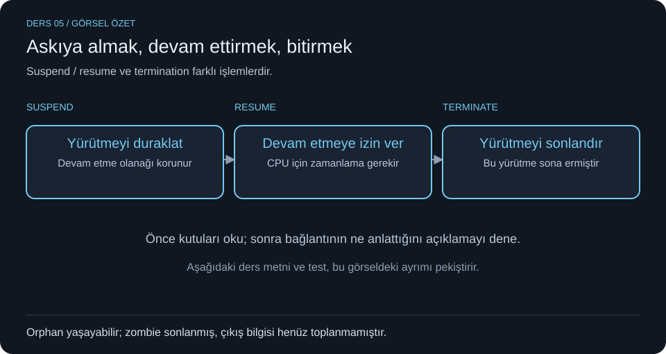
İlk 3 hafta / Miray notları — süreç yaşam döngüsü ve uygulama örnekleri.
- Süreç oluştururken OS ne yapar? Benzersiz PID atar; bellek ve gerekli kaynakları tahsis eder; PCB'yi oluşturup başlatır; parent–child gibi bağlantıları düzenler; yürütme bilgilerini hazırlayıp süreci uygun duruma getirir. Oluşturulan süreç anında CPU'yu almış sayılmaz.
- Windows: CreateProcess. Yeni process'i oluşturur, programı yükler ve ana thread'i başlatır.
STARTUPINFOAbaşlangıç ayarlarını,PROCESS_INFORMATIONise oluşan süreç ve ana thread hakkındaki bilgileri taşır.si.cb = sizeof(si)yapı boyutunu bildirir. Aşağıdaki kod programı başlatır; bitmesini bekler ve alınan handle'ları kapatır.
#include <windows.h>
#include <stdio.h>
int main(void) {
STARTUPINFOA si = {0};
PROCESS_INFORMATION pi = {0};
si.cb = sizeof(si);
if (!CreateProcessA("C:\\Windows\\System32\\notepad.exe",
NULL, NULL, NULL, FALSE, 0, NULL, NULL, &si, &pi)) {
printf("Hata: %lu\n", GetLastError());
return 1;
}
printf("Yeni PID: %lu\n", pi.dwProcessId);
WaitForSingleObject(pi.hProcess, INFINITE);
CloseHandle(pi.hThread);
CloseHandle(pi.hProcess);
return 0;
}
Kodda ne nedir? pi.dwProcessId yeni süreç kimliğidir. pi.hProcess süreç handle'ı, pi.hThread ana thread handle'ıdır. &si ve &pi, bu yapıların adreslerini verir. Handle'ı kapatmak süreci zorla öldürmek değildir. Kaynak: Microsoft süreç oluşturma örneği.
- Unix/Linux: fork, exec, wait.
fork()yeni child process oluşturur. Başarı durumunda iki süreç de çağrı sonrasından ilerler; parent içinde dönüş değeri child'ın PID'si, child içinde 0'dır. Hata durumunda −1 döner ve child oluşmaz.execailesi mevcut sürecin çalıştırdığı programı değiştirir; başarılıysa eski programa geri dönmez.wait()parent'ın child'ın sonlanmasını bekleyip çıkış bilgisini toplamasına imkân verir. Kısa akış: fork ile oluştur → child içinde exec ile başka programı çalıştır → parent içinde wait ile bekle. - Suspend ve resume: Suspend geçici askıya almadır; resume devam ettirmedir. Termination ise yürütmenin sona ermesidir. Askıya alma, I/O beklemekle veya süreci bitirmekle aynı işlem değildir.
- Sonlandırma nedenleri: Normal completion: işin bitmesi. Time limit exceeded / time overrun: süre sınırının aşılması. Memory unavailable: gerekli bellek veya kaynağın sağlanamaması. Bounds violation: sınır ihlali. Protection error: izinsiz erişim/işlem. Arithmetic error: aritmetik hata. I/O failure: giriş/çıkış hatası. Invalid instruction: geçersiz komut. Privileged instruction: kullanıcı kipinde izin verilmeyen ayrıcalıklı işlemin denenmesi. Parent request: yetkili bir mekanizmanın çocuğun sonlandırılmasını istemesi. Hataların nasıl ele alınacağı sisteme ve hata türüne bağlıdır; her hatanın her ortamda doğrudan süreç sonlandırdığını varsayma.
- Orphan ve zombie: Parent sonlandığı hâlde yaşamaya devam eden child, orphan'dır. Child sonlanmış fakat çıkış bilgisi henüz parent tarafından toplanmamışsa zombie olarak adlandırılır. Orphan yaşayabilir; zombie yürütmesini tamamlamıştır. Parent'ın sonlanması her sistemde bütün çocukların otomatik sonlanacağı anlamına gelmez.
- Soru: “fork ile exec aynı şey mi?” Hayır. Fork yeni süreç oluşturur, exec mevcut süreçteki programı değiştirir. “Suspend edilmiş süreç bitmiş midir?” Hayır; devam ettirilebilir. “Sonlanmış child'ın bilgisini toplamak için ne kullanılır?” Unix/Linux örneğinde wait ailesi.
Ders 6 — Thread, paylaşılan kaynaklar ve özel bağlam
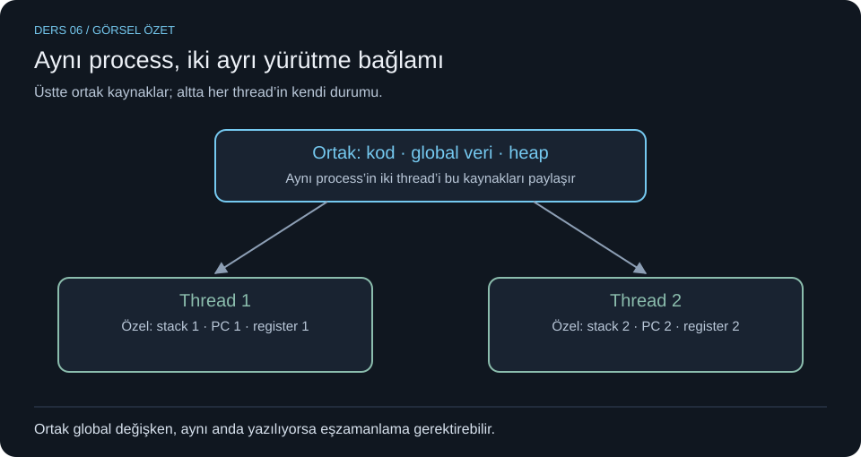
İlk 3 hafta / Miray notları — multithreading ve multiprocessing.
- Thread nedir? Bir process içindeki yürütme akışıdır. Programın ana akışına main thread denebilir; ihtiyaç varsa başka thread'ler oluşturulabilir. Birden fazla thread'in varlığı, hepsinin her an aynı anda CPU'da çalıştığını göstermez.
- Multithreading: Tek process içinde birden fazla thread bulunmasıdır. Aynı süreç belleğini paylaşmaları veri alışverişini kolaylaştırır. Örnek: bir thread kullanıcı arayüzünü yanıtlarken başka thread dosya indirebilir. I/O beklemelerinin olduğu işlerde bu düzen yararlı olabilir.
- Multiprocessing: Bu notlardaki kullanımda işin ayrı process'lerle yürütülmesidir. Her process'in kendine ait adres alanı bulunur. Veri paylaşmak için IPC (inter-process communication / süreçler arası iletişim) mekanizmaları gerekir. Büyük veri işleme, model eğitimi veya görüntü işleme gibi CPU ağırlıklı işler ayrı process'lere bölünebilir. Aynı terim donanım bağlamında birden fazla işlemci kullanımını da anlatabilir; sorudaki bağlama bak.
| Özellik | Aynı process'in thread'leri | Ayrı process'ler |
|---|---|---|
| Bellek | Aynı süreç adres alanını paylaşır | Varsayılan olarak ayrı adres alanları |
| Veri alışverişi | Ortak veri yapıları kullanılabilir | IPC / açıkça kurulan paylaşım gerekir |
| Yürütme durumu | Her thread'in stack, PC ve register bağlamı ayrıdır | Her process'in kendi yürütme ve yönetim durumu vardır |
| Örnek | Arayüz ve indirme akışları | Farklı veri parçalarını işleyen ayrı süreçler |
- Notlardaki ifadeyi doğru yorumla: “Thread'ler CPU yoğun işlerde gerçek paralel çalışamaz” bütün diller ve çalışma ortamları için genel kural değildir. Yeterli çekirdek, uygun kernel eşlemesi ve çalışma zamanı desteği varsa thread'ler de paralel çalışabilir. Bazı ortamlardaki kısıtlar bu sonucu değiştirir. Benzer şekilde, çok process açmak tüm çekirdekleri kendiliğinden ve tam kapasite kullanma garantisi vermez.
- Ortak olan ve ayrı olan: Kod, global/statik veri, heap ve süreç kaynakları paylaşılabilir. Stack, kaldığı komut/PC ve register bağlamı her thread için ayrıdır. “Thread'in kendine ait hiçbir belleği yok” ifadesi doğru değildir.
- Örnek: İki thread aynı global diziyi yalnızca okuyabilir. İkisi aynı global sayacı değiştiriyorsa erişim düzeni önem kazanır; Ders 8'deki yarış durumu buradan doğar. Ayrı process'lerdeki normal global sayaçlar ise kendiliğinden ortak değildir.
- Soru: “Aynı belleği paylaşmak, aynı stack'i kullanmak mıdır?” Hayır. “Çok thread veya çok process her zaman hızlandırır mı?” Hayır; işin yapısı, iletişim, bekleme ve yönetim maliyeti sonucu belirler.
Ders 7 — Concurrency, parallelism ve işi bölme
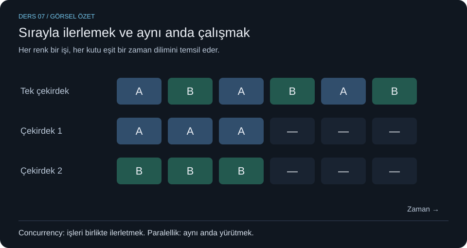
İlk 3 hafta / Miray notları — paralel hesaplamanın temeli ve performans.
- Parallel computing ve parallelism: Büyük bir problem, birlikte yürütülebilen küçük parçalara ayrılır; birden fazla yürütme kaynağı bu parçaları aynı anda işler. Amaç uygun iş bölümüyle süreyi azaltmaktır. Paralellik bu aynı anda yürütme yeteneğidir. Concurrency ise birden fazla işin ilerleyişini birlikte yönetmektir; tek çekirdekte zaman paylaşımıyla da olabilir.
- Data parallelism / veri paralelliği: Aynı işlem, farklı veri parçaları. Notlardaki 100 sandalyeyi 4 boyacıya 25'er dağıtmak örneğinde hepsi boyama yapar; üzerinde çalıştıkları sandalyeler farklıdır. Matris parçalarını aynı kuralla hesaplamak veya görüntünün farklı bölgelerine aynı filtreyi uygulamak da böyledir.
- Task parallelism / görev paralelliği: Farklı işler, ayrı yürütme kaynakları. Bir oyun motorunda fizik ve ses hesaplarının ayrılması örnektir. Veriler aynı da olabilir farklı da. Görevlerin farklı olması, aralarında hiçbir bağımlılık veya iletişim olamayacağı anlamına gelmez.
- π sorusunu işlere ayır: Notta Machin formülü kullanılıyor: π = 16·arctan(1/5) − 4·arctan(1/239). Bir görev ilk arctan hesabını, diğeri ikinci arctan hesabını yapabilir. İkisi de bitince sonuçlar katsayılarıyla birleştirilir. Farklı iki alt hesabı ayrı yürütmek bu örnekte görev paralelliği olarak ele alınıyor. Her seri içinde yeterli terim ve istenen doğruluğu taşıyan sayı aritmetiği gerekir; sıradan
doubleile 42 doğru basamak garanti edilmez. Formül için Brown Üniversitesi matematik notu. - Sequential parts / sıralı kısımlar ve veri bağımlılığı: B adımı A'nın sonucuna ihtiyaç duyuyorsa B, A'nın sonucunu bekler. Daha çok çekirdek bu zorunluluğu ortadan kaldırmaz. Örneğin ara sonuçlar hesaplanmadan nihai toplamı birleştiremezsin.
- Performans terimleri: Performance birim zamanda yapılan işle ilişkilidir. Bandwidth belirli sürede aktarılabilen veri miktarı/hızıdır; örneğin MB/s veya Mb/s. Latency bir işlemin/yanıtın gecikme süresidir; örneğin ms. Yüksek bant genişliği düşük gecikme garantisi değildir. Memory bottleneck, CPU'nun ihtiyaç duyduğu veriyi bellekten yeterince hızlı alamamasıyla oluşan darboğazdır.
- Amdahl yasası: Toplam işin sıralı kalmak zorunda olan kısmı hızlanmayı sınırlar. Ek maliyetlerin yok sayıldığı ideal, sabit iş yükü modelinde, sıralı pay
sve işlemci sayısıNise S(N) = 1 / [s + (1−s)/N]. Örneğin işin %25'i sıralıysa 4 işlemci için1 / (0,25 + 0,75/4) ≈ 2,29kat ideal hızlanma bulunur. İşlemci sayısı çok artsa bile bu örneğin sınırı1/0,25 = 4kattır. Gerçek sonuç iletişim ve yönetim maliyetleriyle daha düşük olabilir. - Neden bazen tek işlemci daha hızlıdır? İşleri bölme, başlatma, veri taşıma ve sonuçları birleştirme maliyetleri kazancı aşabilir. Ortak veriye yanlış erişim de sonucu bozar. Küçük bir işte paralelleştirme ek yükü baskın olabilir. Superlinear speedup ise bazı ölçümlerde N işlemcide N kattan fazla hızlanma görülmesidir; örneğin parçaların önbelleğe daha iyi sığması etkili olabilir. Bu, her programın beklenen davranışı değildir.
- Doğruluk ve determinizm: Bu dersin hedefi aynı problemi tek ve çok işlemciyle çözerken amaçlanan aynı sonucu üretmektir; yürütme sırası değişse de doğruluk korunmalıdır. Kayan noktalı toplamların farklı sırada birleştirilmesi yuvarlama farkları yaratabilir; bu yüzden bilimsel hesaplarda doğruluk ölçütü ve tolerans da belirlenir. Hızlı ama yanlış sonuç başarı değildir.
- MPI nedir? Message Passing Interface, süreçlerin mesaj gönderip almasını sağlayan standart arayüzdür. Özellikle dağıtık bellekli sistemlerde parçaları paylaşmak ve sonuçları toplamak için kullanılır. Bu notlarda tanımı var; ayrıntılı MPI programı veya CUDA algoritması işlendiği varsayılmıyor.
- Derleme ve çalıştırma: GCC, GNU Compiler Collection'dır. C için
gcc merhaba.c -o merhaba, C++ içing++ program.cpp -o programörneği kullanılır.-oçıktı dosyasının adını belirler;0rakamı değildir. Linux'ta oluşturulan program./programile başlatılabilir. Derlemek ile çalıştırmak farklı adımlardır. Notlardakipacman -Syuderleme komutu değil, ilgili Linux dağıtımında paket/sistem güncelleme komutudur. Kaynak: GCC çağırma belgeleri. - Donanım notunu ayır: Pentium 75, Sandy Bridge ve VLIW aynı işlemci veya aynı mimari değildir. Sandy Bridge 2011 dönemi Intel mimarisinin kod adıdır. VLIW'de paralel yürütülecek işlemleri paketleme yükünün önemli kısmı derleyicidedir; avantajı/darboğazı tasarıma bağlıdır. Klasik Pentium ise süperskaler U/V boru hatlarıyla anılır; nottaki “7 komut + 1 aktarım her döngüde” ifadesini Pentium 75'in genel kuralı olarak ezberleme. Intel Pentium geliştirici el kitabı bu iki boru hattını açıklar.
| Soru | Kısa cevap | Gerekçe |
|---|---|---|
| 100 sandalyeyi 4 boyacıya bölmek? | Veri paralelliği | Aynı işlem, farklı veri parçaları |
| İki bağımsız arctan hesabı? | Bu örnekte görev paralelliği | Ayrı alt görevlerin sonuçları birleşir |
| B, A'nın sonucunu kullanıyorsa? | Veri bağımlılığı | B gerekli sonuç gelmeden ilerleyemez |
| 4 çekirdek kesin 4 kat hız mı? | Hayır | Sıralı pay ve ek maliyetler sınır koyar |
Hatırlama: Önce doğru sonuç, sonra hız. Data = aynı iş/farklı veri; task = farklı işler; Amdahl = sıralı payın sınırı. Paralel programlama ve performans çerçevesi için LLNL öğreticisi.
Ders 8 — Yarış durumu, atomiklik ve kritik bölge
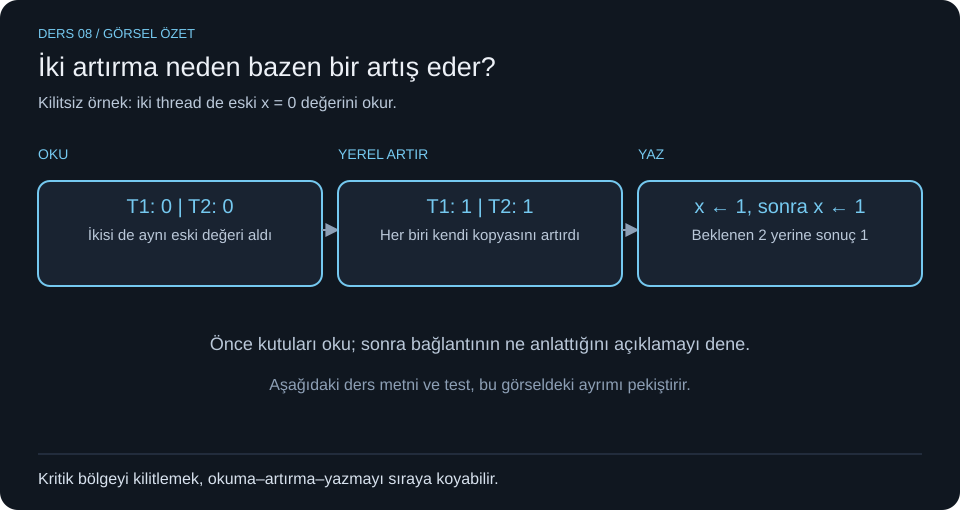
İlk 3 hafta / Miray notları — thread interference. Paylaşılan kaynağa erişen işler birbirinin sonucunu bozabilir. Her ortak erişim hata değildir; erişim sırası ve verinin değiştirilip değiştirilmediği önemlidir. Aşağıdaki adım örneği bu fikri somutlaştırır.
- Konu: Doğru görünen iki işlem neden yanlış sonuç verir?
- Basit açıklama: İki akış paylaşılan veriye erişirken sonuç erişim sırasına bağlıysa race condition oluşabilir.
x++kaynak kodda tek ifade olsa da oku–artır–yaz adımlarına ayrılabilir. Critical section ortak veriye erişen ve birlikte yürütülmesi güvenli olmayan kod parçasıdır; mutual exclusion aynı anda tek akışın bu bölgeye girmesini sağlar. - Terimler: Race condition = yarış durumu; critical section = kritik bölge; mutual exclusion = karşılıklı dışlama; lock/unlock = kilitle/kilidi aç; atomic operation = atomik işlem; interleaving = adımların iç içe geçmesi; lost update = kayıp güncelleme.
- Örnek: x=0 iken iki kişinin artırması:
| Adım | T1 | T2 | Ortak x |
|---|---|---|---|
| 1 | x'i okur: 0 | 0 | |
| 2 | x'i okur: 0 | 0 | |
| 3 | Yerelde 1 hesaplar | 0 | |
| 4 | Yerelde 1 hesaplar | 0 | |
| 5 | 1 yazar | 1 | |
| 6 | 1 yazar | 1 |
İstenen 2, izlenen hatalı yürütmede 1. Bu tablo, adım mantığını açıklayan modeldir; gerçek C/C++'ta atomik olmayan ortak değişkende veri yarışı tanımsız davranıştır; bütün olası sonuçları yalnızca 1 ve 2 diye sınırlamayız (ek doğruluk notu).
5. Sınav noktaları: Kilit okuma+değiştirme+yazmanın tamamını korumalı. Sadece son yazmayı kilitlemek eski değer üzerinden hesaplamayı engellemez. Kilit alma işleminin kendisi de güvenli/atomik olmalıdır. Atomic, diğer akışlara göre bölünmez etki demektir; “CPU'da hiçbir kesme olamaz” ya da “inline fonksiyon” demek değildir. Inline, atomiklik garantisi sağlamaz; “1000 kat hız” genel bir kural değildir. Nottaki echo örneğinde chin/chout gerçekten paylaşılıyorsa okuma–kopyalama–yazdırma arasına başka akış girmesi beklenmedik karakter üretir. Ayrı process'lerin normal global değişkenleri kendiliğinden ortak değildir; örnek paylaşımlı veri varsayar.
6. Hatırlama: “Bir satır ≠ bir atomik işlem.” Ortak veriye oku–değiştir–yaz varsa korumayı düşün.
7. Örnek soru ve çözüm: “İki thread sadece aynı diziyi okuyor. Kilit kesin gerekir mi?” Hayır. Başka yazan yoksa salt ortak okuma kendi başına veri yarışı oluşturmaz. Ortak toplam += ... ise bir yazma ve yarış kaynağıdır.
Ders 9 — Semaphore ve mutex: sınavın sayısal kısmı
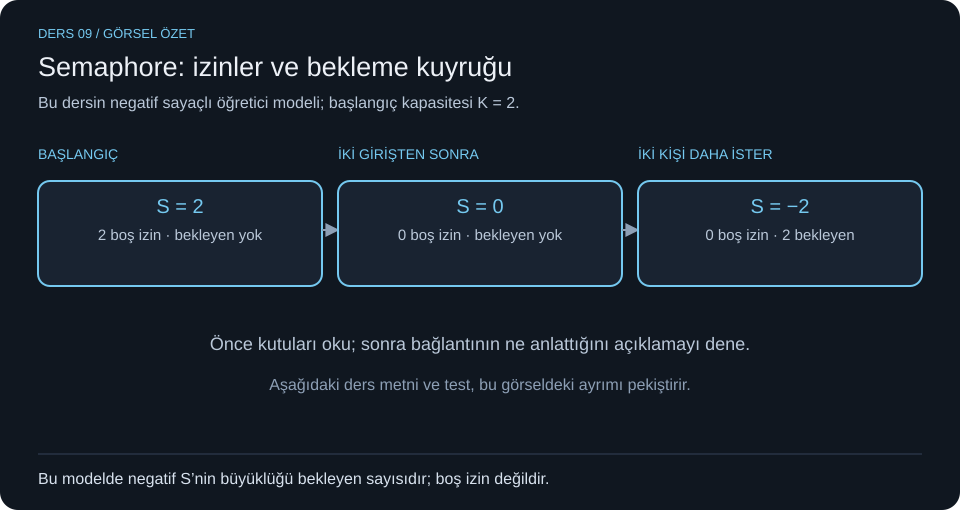
- Konu: Kaç giriş izni var, kaç kişi bekliyor? (K18, K25)
- Basit açıklama: Counting semaphore, sınırlı sayıdaki izinleri yönetir. Başlangıç K=2 ise aynı anda iki izin tutulabilir. Bu, tek girişli mutual exclusion ile aynı amaç değildir. Mutex tek sahipli bir kilittir; counting semaphore birden fazla eşdeğer kaynak için kullanılabilir.
- Terimler: Semaphore = semafor; counting semaphore = saymalı semafor; binary semaphore = ikili semafor; permit = izin; wait/P/down = izin alma; signal/V/up = izin bırakma; blocked queue = bekleme kuyruğu; mutex = karşılıklı dışlama kilidi.
- Örnek: İki kabinli bir hizmet noktasında iki kişi işlem yapar, diğerleri sırada bekler. S=1 demek bir boş izin demektir; “her zaman içerisi tamamen boş” demek değildir. Başlangıç kapasitesini bilmelisin.
- Sınav noktaları: Çıkmış soru negatif değer sorduğu ve notta negatif değer kuyrukla ilişkilendirildiği için aşağıdaki işaretli sayaçlı ders modeli kullanılıyor. Her kütüphanenin API'si negatif değeri aynen göstermeyebilir.
Başlangıç: S = K
wait(S): S = S - 1; S < 0 ise çağıranı kuyruğa alıp blokla
signal(S): S = S + 1; S <= 0 ise kuyruktan bir bekleyeni uyandır
Bu işlemler sıradan korunmasız S--/S++ olarak uygulanamaz; sayaç/kuyruk güncellemesi atomik biçimde koordine edilir. Uyanan thread önce ready olur; CPU'yu hemen alacağı garanti değildir.
| Sayaç | Ders modelinde anlamı |
|---|---|
| S > 0 | S adet kullanılabilir izin, semafor kuyruğunda bekleyen yok |
| S = 0 | Boş izin yok, semafor kuyruğunda bekleyen yok |
| S < 0 | Boş izin yok, -S adet bekleyen var |
İzinleri düzgün alıp bırakan, sabit K kapasiteli ve geçişleri tamamlanmış bir modelde: boş izin=max(S,0); bekleyen=max(-S,0); tutulan izin=K-max(S,0). “Tutulan izin” her nanosaniyede fiziksel olarak kritik kodu yürüten CPU sayısı değildir; thread izin aldıktan sonra ready durumda da olabilir. Sınavın beklenen “içeride” sayımı bu izin sahipliğidir.
K=2, dört thread sırayla wait çağırıyor; henüz çıkan yok:
| Olay | S | İzin sahibi | Bekleyen |
|---|---|---|---|
| Başlangıç | 2 | 0 | 0 |
| T1 wait | 1 | 1 | 0 |
| T2 wait | 0 | 2 | 0 |
| T3 wait | -1 | 2 | 1 |
| T4 wait | -2 | 2 | 2 |
| Bir izin sahibi signal | -1 | 2: biri bırakır, sıradaki devralır | 1 |
Mutex ile binary semaphore aynı şey değildir: mutex'in sahipliği vardır; normalde alan thread bırakır. Semaphore signal işlemi sahiplik kuralına aynı biçimde bağlı değildir. Binary semaphore benzer dışlama düzeni kurabilir, fakat mutex'i sadece “0–1 sayan semafor” diye tanımlamak eksiktir.
- Hatırlama: “Pozitif: boş izin; negatif: kuyruk; sıfır: izin bitti, kuyruk yok.” Önce K kaç? diye sor.
- Örnek soru ve çözüm: “Başlangıç K=3, S=-2; durum?” 3 izin sahibi, 2 bekleyen, 0 boş izin. K bilinmeseydi içerideki sayıyı yalnızca -2'den çıkaramazdın.
Ders 10 — İşi iki thread'e bölme, sonuçları birleştirme
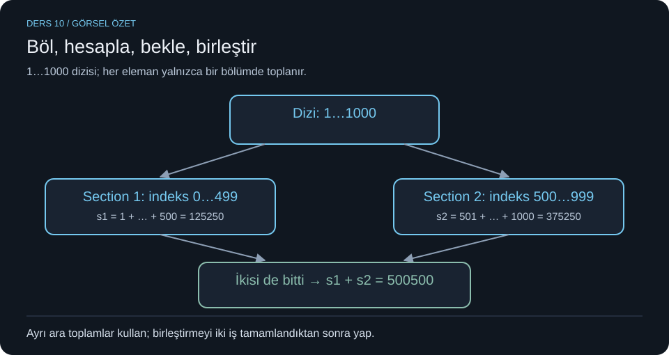
- Konu: Böl–hesapla–bekle–birleştir. (Çıkmış S3; K05, K06)
- Basit açıklama: Her işçiye ayrık veri aralığı ver. Her biri kendi ara toplamını üretsin. Hepsinin bittiği yerde sonuçları birleştir. Paylaşılan tek toplamı sürekli güncellemek gereksiz yarış yaratır.
- Terimler: Section = iş bölümü bloğu; parallel region = paralel bölge; shared/private = ortak/özel; partial sum = ara toplam; barrier = bariyer/tamamlanma bekleme noktası; join = iş parçacığının bitmesini bekleme; reduction = kısmi sonuçları birleştirme.
- Örnek: 1000 fişi iki kişiye dağıt: ilk 500 fiş, son 500 fiş. İki kişi ayrı kâğıtlara toplar, sonrasında iki sayı eklenir. Son kişi bitmeden genel toplamı ilan etme.
- Sınav noktaları: İlk aralık
[0,500), ikincisi[500,1000); her biri 500 eleman. Son geçerli indeks 999. Döngü değişkenlerini blok içinde tanımlayarak ayrı tut. Diziyi ortak okuyabilirler; her ara toplamın yalnızca tek yazarı olsun. Sonuç yazdırma paralel bölgenin dışında bir kez yapılsın.sectionsözcüğünden dolayı çıkmış soruya en yakın çözüm OpenMP kabul edildi; API'nin sınavda açıkça yazılmayan kısmı için bu bir yorumdur. OpenMP sözdizimi ve bariyer açıklaması notlarda açık kodu bulunmayan, soruyu çözmek için eklenen bilgidir. OpenMPsectionssonundanowaityoksa örtük bariyer bulunur. OpenMP sections tanımı. - Hatırlama: Böl–Topla–Bekle–Birleştir. İndeksler için
0 ≤ i < 500,500 ≤ i < 1000. - Örnek soru ve çözüm: “İki section içinde aynı
toplam += dizi[i]kullanılırsa ne değişir?” Aynı değişkende yarış riski oluşur. Ayrıs1/s2ile her sonucun tek yazarı olur; hesaplar tamamlanıncas1+s2alınır. Tam çözüm sonraki çıkmış sorular bölümündedir.
Ders 11 — User/kernel thread, eşleme ve kütüphaneler
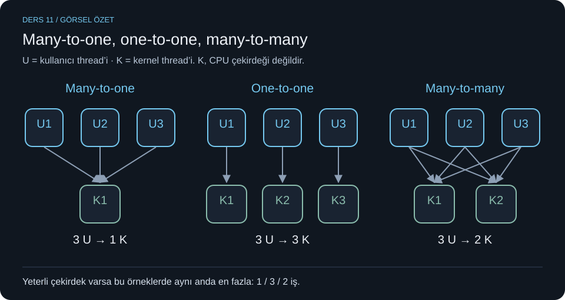
- Bu derste neyi öğreniyoruz? Bir programın içindeki iş parçacıkları CPU'ya nasıl ulaşır? Many-to-one, one-to-one ve many-to-many bu bağlantının adlarıdır. (K05, K06, K15, K24)
Önce thread neydi? Thread, programın içinde ilerleyen bir iş akışıdır. Bir fotoğraf uygulaması düşün: bir iş akışı fotoğrafı filtreliyor, diğeri dosyaya kaydediyor, üçüncüsü ekrandaki düğmelere cevap veriyor. Bunlara U1, U2, U3 diyeceğiz. Üç iş akışının bulunması, üçünün aynı anda CPU'da çalıştığını tek başına göstermez.
- İki katmanı ayıralım. Kullanıcı düzeyi thread'i (user-level thread, ULT), programın çalışma zamanı veya thread kütüphanesi tarafından yönetilen iş akışıdır. Buradaki “kullanıcı”, bilgisayarı kullanan kişi değildir; programın çalıştığı kullanıcı alanını anlatır. Kernel, işletim sisteminin çekirdeğidir. Kernel düzeyi thread (kernel-level thread, KLT), işletim sisteminin CPU zamanı verebildiği yürütme akışıdır. Bunlara K1, K2, K3 diyeceğiz. K1 bir CPU çekirdeği değildir. İşletim sistemi K1'i uygun bir CPU çekirdeğinde çalıştırabilir, daha sonra başka çekirdeğe taşıyabilir.
Eşleme ne demek? U1 işinin hangi K üzerinden yürütüleceğini belirleyen bağlantıdır: kullanıcı thread'i → kernel thread'i → CPU çekirdeği. İlk bağlantıyı çalışma zamanı/kütüphane düzenler; CPU zamanını işletim sistemi verir. Many-to-one adında soldaki sözcük U tarafını, sağdaki K tarafını anlatır. Many = çok, one = bir.
Many-to-one: çok iş akışı, tek kernel thread. Örnek bağlantı: U1, U2, U3 → K1. Üçü de aynı K1 üzerinden yürür. Kütüphane önce U1'e, sonra U2'ye, sonra U3'e sıra verebilir; işler dönüşümlü ilerler. Fakat aynı anda yalnızca biri CPU'da çalışabilir. Bilgisayarda 8 çekirdek olsa bile bu üç iş tek K1 üzerinden 3 çekirdeğe aynı anda dağıtılamaz. Saf modelde U1, K1'i beklemeye sokan bir sistem çağrısı yaparsa U2 ve U3 de ilerleyemez. Avantajı, kullanıcı thread'leri arasındaki geçişin kernel'e başvurmadan yapılabilmesidir.
One-to-one: her iş akışına ayrı kernel thread. Bağlantılar U1 → K1, U2 → K2, U3 → K3 şeklindedir. Üç uygun CPU çekirdeği ve çalışmaya hazır üç iş varsa işletim sistemi bunları aynı anda çalıştırabilir. K1 dosya beklerken K2 ve K3 çalışmaya devam edebilir. Ama bilgisayarda yalnızca bir çekirdek varsa yine sırayla CPU kullanırlar. Ayrı KLT paralellik imkânı sağlar; aynı anda çalışmayı garanti etmez. Her kullanıcı thread'i için ayrı KLT yönetmek de kaynak ve yönetim maliyeti getirir.
Many-to-many: çok iş akışı, birden fazla kernel thread. Örneğin 6 ULT → 2 KLT olsun. Kütüphane altı işi iki KLT üzerinde sırayla yürütür; her işin ömür boyu aynı K'ye bağlı kalması gerekmez. En az iki uygun çekirdek varsa bu gruptan aynı anda en fazla iki iş CPU'da yürüyebilir. KLT'lerden biri bloklanırsa diğeri çalışmaya devam edebilir; ikisi de bloklanırsa grup bekler. Yönetimi önceki modellere göre daha karmaşıktır. Hybrid/karma veya iki düzeyli model, bu yapının bazı kullanıcı thread'lerini belirli bir KLT'ye ayrıca bağlayabilen çeşidini anlatabilir.
| Model | Bağlantıyı oku | 8 ULT ve 4 kullanılabilir çekirdekte aynı anda çalışma üst sınırı | Bir KLT bloklanırsa |
|---|---|---|---|
| Many-to-one | 8 kullanıcı thread'i → 1 kernel thread | 1 iş | Bu grubun tek yürütme yolu bekler |
| One-to-one | 8 kullanıcı thread'i → 8 kernel thread | 4 iş | Diğer KLT'ler çalışabilir |
| Many-to-many | Örnek: 8 kullanıcı thread'i → 2 kernel thread | 2 iş | Diğer KLT çalışabilir |
Bu sayılar, işlerin hazır olduğu ve çekirdeklerin bu işlere ayrılabildiği örneğin üst sınırlarıdır. Gerçek hızlanma; işlerin birbirini beklemesine, kilitlere ve diğer programlara da bağlıdır.
Pthreads, Windows API ve Java bu resmin neresinde? Bunlar programcının thread oluşturmak ve yönetmek için kullandığı arayüzlerdir. Thread kütüphanesi bu işlemleri sunar; JVM, Java programını çalıştıran ortamdır. Yalnızca bir arayüzün adını görmek, eşleme modelini kesin söylemeye yetmez. Örneğin “Pthreads kullanıyor” cümlesinden “kesin many-to-one” sonucu çıkarma. Java'da da çalışma zamanı ve thread türü önemlidir. “Linux'ta process ve thread ayrımı yok” sözü ortak task altyapısıyla ilgilidir; aynı kaynakları paylaşmaları bakımından process ve thread tamamen aynı şey değildir. Her işletim sisteminin POSIX arayüzünü desteklediğini de varsayma.
Bir soruyu birlikte çözelim. “8 ULT, 2 KLT, 4 çekirdek: aynı anda en fazla kaç kullanıcı işi CPU'da çalışabilir?” Önce KLT sayısına bak: 2. Sonra çekirdek sayısına bak: 4. İki yürütme akışını aynı anda çalıştıracak çekirdek var, fakat dört işi taşıyacak dört KLT yok. Cevap en fazla 2. Bu, altı işin hiç çalışmayacağı anlamına gelmez; onlara daha sonra sıra gelebilir. Burada aynı anda çalışmayı sayıyoruz.
Kısa tekrar: Many-to-one = çok U, tek K. One-to-one = her U'ya ayrı K. Many-to-many = çok U, birden fazla K üzerinde paylaştırılır. Soruda “kaç thread var?” ile “aynı anda kaçı çalışabilir?” sorularını ayır. Üç modelin eşleme ve bloklanma farkları için üniversite ders notu.
Animasyonu nasıl okuyacaksın? Üstteki U kutuları programın işlerini, alttaki K kutuları işletim sisteminin zamanladığı akışları gösterir. Çizgiler bağlantıdır. Önce “Many-to-one” seçeneğinde tek K1'e bak; U1 beklemeye geçtiğinde diğer U'ların neden durduğunu izle. Sonra “One-to-one” seçeneğine geç: ayrı K2 ve K3 sayesinde diğer işlerin ilerleyebildiğini göreceksin. Animasyon bu iki modeli karşılaştırır; many-to-many örneği yukarıdaki tabloda açıklanmıştır.
Ders 12 — Deadlock, livelock, starvation ve öncelik
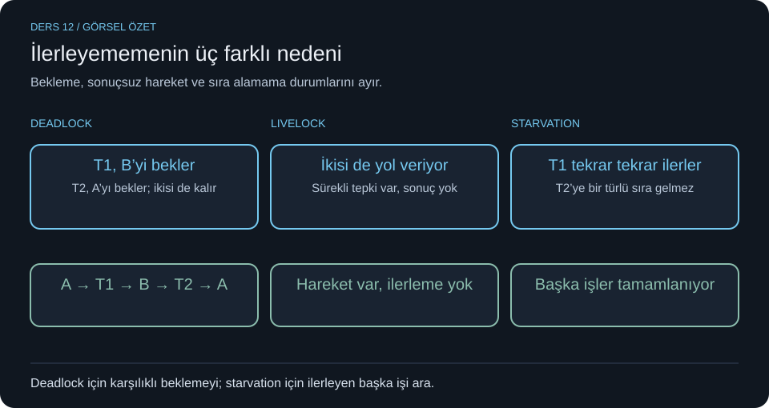
Konu: Birden fazla iş neden ilerleyemez? (K08, K14)
Basit açıklama: Deadlock'ta işler birbirini bekleyip kalır. Livelock'ta hareket vardır ama iş tamamlanmaz. Starvation'da bazı işler ilerlerken bir iş sürekli dışarıda kalır. Bunlar race condition ile aynı hata değildir.
Terimler: Deadlock = kilitlenme; livelock = canlı kilitlenme; starvation = aç kalma; priority = öncelik; progress = ilerleme; scheduling = zamanlama; preemption = CPU'yu geri alma.
Örnek: T1 A kilidini tutup B'yi; T2 B'yi tutup A'yı bekler: deadlock. Koridorda iki kişinin sürekli aynı yöne çekilip birbirini tekrar engellemesi: livelock. Sürekli yüksek öncelikli işler geldiği için alt öncelikli işe hiç sıra gelmemesi: starvation.
Sınav noktaları: Deadlock için karşılıklı bekleme göster; yalnızca “iş yavaş” demek yetmez. Livelock'ta aktif tekrar/tepki var. Starvation'da sistemin başka işleri ilerleyebilir. Öncelik sayılarının yönü sisteme bağlıdır: 0'ın en yüksek olması evrensel değildir. Notta “Linux 6, Windows 9” biçimindeki öncelik sınıfı sayıları bağlamsız verilmiş; tüm öncelik seviyelerinin değişmez sayısı diye ezberlenmemeli. Eşzamanlılıkta OS'nin çözmesi gerekenler notta iletişim, kaynak paylaşımı, aktiviteleri koordine etme ve CPU zamanı dağıtma olarak özetleniyor. İlk 3 hafta / Miray notları — deadlock'un dört gerekli koşulu: Mutual exclusion: ilgili kaynak aynı anda yalnızca bir süreççe kullanılabilir. Hold and wait: süreç elindeki kaynağı tutarken başka kaynak bekler. No preemption: kaynak zorla geri alınamaz; sahibi bırakmalıdır. Circular wait: süreçler arasında dairesel bekleme zinciri vardır. Bu klasik modelde deadlock için dört koşul birlikte gereklidir; koşullardan en az birini tasarım gereği engellemek deadlock'u önleme yaklaşımıdır. Örnek: P1 A'yı tutar B'yi bekler; P2 B'yi tutar A'yı bekler. Dört koşulu sadece listelemek yerine örnekte hangisinin nerede oluştuğunu göster.
Hatırlama: “Dead: bekler. Live: uğraşır. Starve: sıra gelmez.”
Örnek soru ve çözüm: “T1 her seferinde kilidi alıyor, T2 hiç alamıyor; T1 işi bitirip yenisine geçebiliyor.” Starvation. Herkesin birbirini beklediği deadlock değildir. Ek öğretici çözüm fikri: aynı sırada kilit alma deadlock riskini; adil sıra/yaşlandırma starvation riskini azaltabilir. Bunlar notta algoritma olarak işlenmiş kabul edilmedi.
Ders 13 — İşlemci, bus, instruction cycle ve assembly
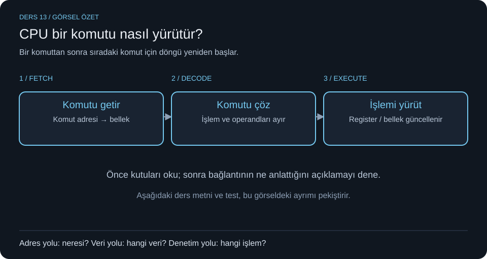
- Konu: CPU bir komutu nasıl işler? (K07, K10–K12, K19, K21)
- Basit açıklama: CPU komutu bellekten getirir, ne olduğunu çözer, yürütür; sonra sıradakine geçer. Notlardaki instruction cycle şekli bu üç adımı anlatır. Dallar/döngüler sonraki komut adresini değiştirebilir.
- Terimler: Fetch = getir; decode = çöz; execute = yürüt; instruction = komut; opcode = işlem kodu; operand = üzerinde işlem yapılan değer/yazmaç/adres; address bus = adres yolu; data bus = veri yolu; control bus = denetim yolu; FPU = kayan nokta birimi; BIOS = temel giriş/çıkış yazılımı; POST = açılış öz sınaması; MBR = ana önyükleme kaydı.
- Örnek ve şema:
MOV DL,41hiçindeMOVişlem,DLhedef yazmaç,41honaltılık değerdir.41h=65ASCII'de A'dır. Klasik DOS örneğindeAH=02h,DL=41h,INT 21hkarakter çıkışı ister.INT 20hsonlandırma örneğidir; bu DOS bağlamıdır, güncel her OS'nin API'si değildir.
Başla → Fetch → Decode → Execute → sonraki komut için Fetch ... → Bitir
CPU --adres/denetim isteği--> Bellek
CPU <-------veri-----------> Bellek
- Sınav noktaları: Address bus “neresi?”, data bus “hangi veri?”, control bus “hangi işlem?” sorusunu yanıtlar. Notta control bus tek yön çizilmiş; tüm denetim sinyalleri için evrensel tek yön kuralı değildir.
MOVkopyalar,INCartırır,DECazaltır,CMPkarşılaştırma bayraklarını ayarlar,JNZzero flag sıfırsa dallanır,LOOPilgili sayaç yazmacını azaltıp sıfır değilse döner. NottakiCL=64h100'dür; döngüde tümCXkullanılıyorsaCHde doğru başlatılmalıdır.MOV CL,1Ahise 26'dır; onaltılık/ondalık ayrımına dikkat.Rungenellikle programı başlatma,executekomutu/işi yürütme anlamında kullanılır; bağlama göre örtüşebilir.
Boot anlatımındaki BIOS/POST ve 0. sektör–512 byte MBR bilgisi klasik BIOS/MBR modelidir; her modern önyüklemenin zorunlu modeli değildir. Shell kernel değildir. /bin, /sbin, /usr Unix dizin düzeniyle ilgilidir; nottaki “USR=Unique System Resources” ifadesi güvenilir evrensel açılım olarak kullanılmamalı. Fiber hafif yürütme bağlamıdır; thread→fiber→instruction zinciri bütün sistemlerin zorunlu hiyerarşisi değildir.
6. Hatırlama: Getir–Çöz–Yürüt. Bus için Adres=Nereye, Veri=Ne, Kontrol=Nasıl.
7. Örnek soru ve çözüm: “MOV DL,41h kaç ondalıktır ve karakteri nedir?” 4×16+1=65, ASCII A. “Komut getirildikten hemen sonra?” Decode. “LOOP ile 100 tur isteniyor, yalnız CL yüklemek yeterli mi?” CX'in üst kısmı bilinmiyorsa yeterli değil; başlangıç sayacının tamamı doğru olmalıdır.
Ders 14 — Register genişliği, segmentler, adres ve bit kaydırma
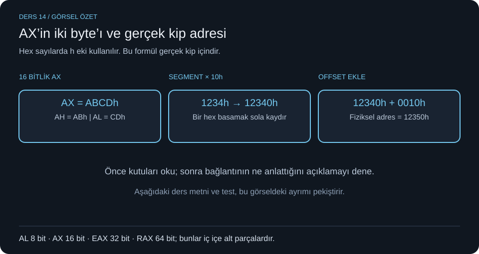
- Konu: Sayı kaç bit, adres nasıl hesaplanır? (K04, K07, K10, K12, K19–K21)
- Basit açıklama: Register CPU'nun hızlı çalışma alanıdır. x86 örneğinde AL 8 bit, AX 16 bit, EAX 32 bit, RAX 64 bittir. Küçük isimler büyük yazmacın belirli alt parçalarını gösterir. AH/AL, AX'in yüksek/düşük byte'larıdır.
- Terimler: Byte = 8 bit; word = burada x86 için 16 bit; doubleword/DWORD = 32 bit; quadword/QWORD = 64 bit; high/low = yüksek/düşük bölüm; accumulator = akümülatör; base = taban; count = sayaç; instruction pointer = komut işaretçisi; segment = bölüm; offset = ofset; shift = bit kaydırma; real/protected/long mode = gerçek/korumalı/uzun kip.
- Örnek: AX=1234h ise AH=12h, AL=34h. İşaretsiz en büyükler: AL=FFh=255; AX=FFFFh=65535; EAX=FFFFFFFFh=4294967295. IP/EIP/RIP sıradaki komut konumuyla ilgilidir. CS kod, DS veri, SS stack, ES ek segment; SP stack tepesini, BP stack çerçevesini adreslemede kullanılır. Stack LIFO (son giren ilk çıkar) mantığındadır.
- Sınav noktaları ve hesaplar:
| Hesap | Yöntem | Çözüm |
|---|---|---|
| 0F00:000F gerçek kip fiziksel adresi | segment × 10h + offset | F000h + 000Fh = F00Fh |
| 1234:0010 gerçek kip fiziksel adresi | 1234h × 10h + 0010h | 12340h + 10h = 12350h |
| AX=ABCDh | yüksek/düşük byte ayır | AH=ABh, AL=CDh |
| 12 << 1 | bir bit sola | 24, taşma olmadığı varsayımıyla |
| 12 >> 1 | bir bit sağa | 6, işaretsiz/uygun pozitif bağlamda |
Gerçek kip adres formülü bütün protected/long mode adreslemelerine uygulanmaz. Sağa kaydırma negatif işaretli sayılarda ve sola kaydırma taşmada “daima yarısı/iki katı” diye genellenmez. 32 bit adres, teorik olarak 2^32 byte=4 GiB alanı adresler; nottaki “en fazla 2 GB” kullanıcı alanı düzeni gibi özel bağlamlara aittir, 32 bitin matematiksel sınırı değildir. İşlemci çalışma kipi ile user/kernel yetki kipi farklı eksenlerdir. 64 bit OS'nin 32 bit uygulama çalıştırması uyumluluk desteğine bağlıdır. Nottaki “long mode'da tüm segmentler yok sayılır” cümlesi de genellemedir; FS/GS gibi istisnalar vardır (ek doğruluk notu).
6. Hatırlama: AL–AX–EAX–RAX: 8–16–32–64. Gerçek kip: segmenti bir hex basamak sola kaydır, offset'i ekle.
7. Örnek soru ve çözüm: “CS=1000h, IP=0020h ise gerçek kip adresi?” 1000h×10h+0020h=10020h. “IP kodun kendisini mi tutar?” Hayır, komut adresini/konumunu tutar; kod bellektedir.
Ders 15 — Windows süreç API'leri ve native/WOW64
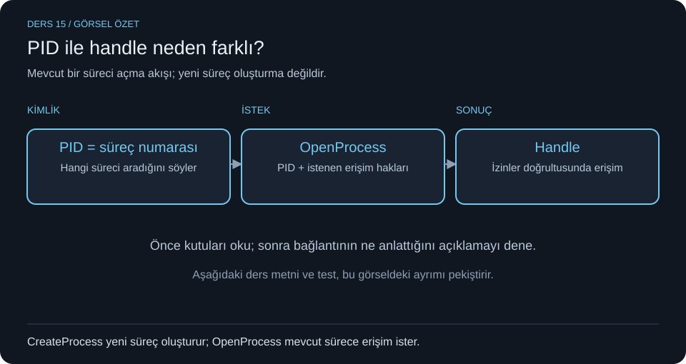
İlk 3 hafta / Miray notları — Win32 API ile fiziksel RAM sorgusu. Win32 API, programın Windows hizmetlerini çağırmasını sağlayan arayüzlerdir. GetPhysicallyInstalledSystemMemory, bilgisayara fiziksel olarak takılı RAM miktarını kilobayt cinsinden bildirir. Boş RAM'i veya o anki süreç belleğini ölçmez.
#include <windows.h>
#include <stdio.h>
int main(void) {
ULONGLONG ramKB = 0;
if (!GetPhysicallyInstalledSystemMemory(&ramKB)) {
printf("Hata: %lu\n", GetLastError());
return 1;
}
printf("Takili RAM: %llu KB\n", ramKB);
return 0;
}
İki farklı çıktı var: Fonksiyonun BOOL dönüşü başarı durumunu, ramKB değişkeni RAM miktarını taşır. &ramKB değişkenin adresidir; fonksiyon sonucu bu adrese yazar. PULONGLONG, işaretsiz 64 bit tamsayıya işaretçidir; “yalnızca pozitif” yerine sıfırı da içeren “negatif olmayan” olarak düşün. [out], parametrenin çıktı almak için kullanıldığını anlatan belge işaretidir; C çağrısına [out] yazılmaz. Başarısızlıkta dönüş FALSE'dur; hata bilgisi GetLastError() ile alınabilir. Uygun Windows GCC/MinGW ortamında örnek derleme: gcc ram_bilgi.c -o ram_bilgi.exe. Kaynak: Microsoft RAM sorgusu belgesi.
- Konu: Süreç bilgilerini programdan sorgulama. (K01, K06, K17)
- Basit açıklama: API işletim sisteminden hizmet isteme arayüzüdür. PID süreç numarasıdır; handle, belli erişim haklarıyla bir OS nesnesine erişim sağlayan tanıtıcıdır. İkisi aynı değer türü/amaç değildir.
- Terimler: API = uygulama programlama arayüzü; handle = erişim tanıtıcısı; native = ilgili platformun doğal yürütme biçimi; WOW64 = 64 bit Windows'ta uyumlu 32 bit uygulama ortamı; major/minor = ana/alt sürüm; module base name = modülün yol içermeyen dosya adı.
- Örnek: Görev yöneticisindeki PID ile bir süreci tanırsın; programın
OpenProcessile aldığı handle ise o sürece hangi işlemleri yapabileceğini belirleyen erişim bağlamına sahiptir. - Sınav noktaları:
| API | Bilmen gereken işlev | Karıştırma |
|---|---|---|
OpenProcess |
İstenen haklarla mevcut sürece handle alır | Yeni süreç oluşturmaz |
GetProcessVersion |
EXE'nin hedeflediği sistem sürüm bilgisini verir | Doğrudan “şu an kurulu OS sürümü” değildir |
GetCurrentProcessorNumber |
Çağrı anında mevcut thread'in çalıştığı işlemci numarasını verir | PID veya thread ID değildir |
IsWow64Process |
Sürecin WOW64 altında olup olmadığını çıktı parametresine yazar | Fonksiyonun başarı dönüşü ile bu çıktı farklıdır |
GetModuleBaseName |
Modülün yol içermeyen adını verir | Tam dosya yolu değildir |
Nottaki GetCurrentProcessNumber benzeri yazım için doğru API adı GetCurrentProcessorNumberdır. GetProcessVersion sonucunda HIGHWORD major, LOWORD minor'dur. IsWow64Process başarısızsa dönüş sıfırdır; başarılı olduğunda asıl WOW64 sonucu çıktı parametresinden okunur. x64 Windows bağlamında WOW64=false sonucunu “her platformda kesin native 64 bit” diye genelleme. Notta geçen 32/64 bit derleme ödevi mimariyi gözlemlemek içindir. windows.h API bildirimlerini sağlar; her fonksiyonun gerektirdiği ek header/library ayrıca kontrol edilir.
Bu tablo nottaki belirsiz API ifadeleri için belgeyle doğrulandı: GetProcessVersion, GetCurrentProcessorNumber, IsWow64Process, GetModuleBaseName.
6. Hatırlama: “PID kim, handle hangi erişimle, processor number hangi CPU?”
7. Örnek soru ve çözüm: “OpenProcess çağrısı yeni Notepad başlatır mı?” Hayır. Var olan sürece erişim açar. Notepad başlatma ödevinde ayrıca süreç oluşturma işlemi gerekir. “GetModuleBaseName sonucunda klasör yolu bekler miyim?” Hayır; temel dosya adı beklenir.
Ders 16 — Kimlik, yetki ve çok süreçli tarayıcı
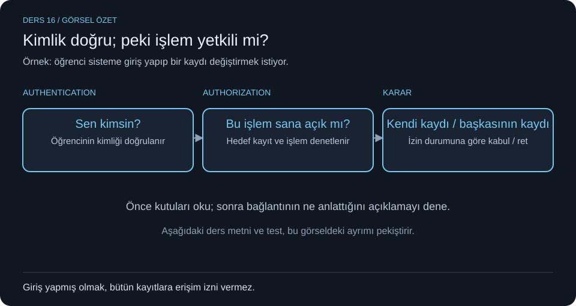
- Konu: Kim olduğunu bilmek ve ne yapabileceğini belirlemek. (K09, K11)
- Basit açıklama: Authentication kimliği doğrular; authorization o kimliğin erişim yetkisini denetler. Doğru şifreyle girmek, bütün verileri silebilmek anlamına gelmez. Tarayıcıda süreçlere ayırma ise sekmeleri birbirinden yalıtarak hata ve saldırının yayılmasını azaltabilir.
- Terimler: Authentication = kimlik doğrulama; authorization = yetkilendirme; isolation = yalıtım; sandbox = sınırlı çalışma ortamı; memory leak = bellek sızıntısı; RBAC = rol tabanlı erişim; ABAC = öznitelik tabanlı erişim; ACL = erişim denetim listesi; session = oturum; token = belirteç; MFA = çok faktörlü doğrulama.
- Örnek: Öğrenci kimliğiyle portala girersin: authentication. Yalnız kendi notlarını görürsün: authorization. Admin kullanıcı silebilir, viewer yalnız okuyabilir. Bir tarayıcı sekmesinin çökmesinin diğerlerini zorunlu kapatmaması süreç yalıtımının faydasıdır.
- Sınav noktaları: RBAC kullanıcı→rol→izin; ABAC kullanıcı/kaynak/zaman/konum gibi niteliklere göre karar; ACL her kaynakta kimin ne yapabileceğinin listesi. Katmanlar: frontend giriş formu/oturum arayüzü; backend kimlik ve endpoint yetki kontrolü; service iş kuralı; data katmanı satır/view/prosedür erişimleri. Güvenlik yalnızca frontend'de buton gizlemekle sağlanmaz. Controller isteği yönlendirir, iş mantığı genellikle service'te, veri erişimi repository/DAO'dadır. Session tabanlı düzende sunucu oturum kaydı tutar; token tabanlı düzende istemci belirteci sunar. JWT imzalı belirteç biçimidir; şifrelenmiş olmak zorunda değildir (ek açıklama). MFA farklı doğrulama faktörlerini birleştirir. OAuth 2.0 yetki devri protokolüdür; tek başına kimlik doğrulama protokolü diye ezberleme. Tarayıcıda ana süreç, renderer, extension ve network süreçleri bulunabilir; “her sekme her zaman tam bir süreç” kesin kural değildir. Sızıntı ayrılan belleğin artık kullanılmadığı hâlde serbest bırakılmamasıdır; “uygulama çok RAM kullanıyor” tek başına kanıt değildir.
- Hatırlama: “Authentication: kimsin? Authorization: neye iznin var?” RBAC=rol, ABAC=özellik, ACL=kaynak listesi.
- Örnek soru ve çözüm: “Şifresi doğru öğrenci başka öğrencinin kaydını güncelleyebiliyor; hangi denetim eksik?” Authorization. Kimliği doğrulanmış olabilir; hedef kaynağa yetkisi denetlenmiyor. “Sadece giriş formunu değiştirmek çözer mi?” Hayır, sunucuda yetki kontrolü gerekir.
Ders 17 — Ağ kimlikleri ve spoofing (düşük öncelik)
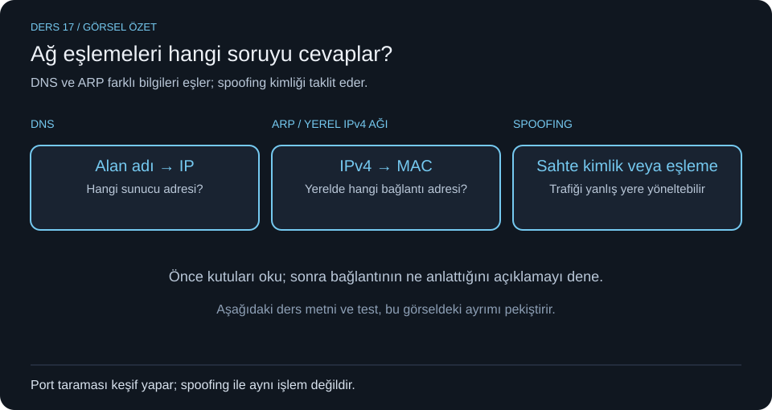
- Konu: Kaynağı başka biriymiş gibi gösterme. (K24)
- Basit açıklama: Spoofing bir kimlik/adres bilgisini taklit etmektir. DNS ad–IP; ARP yerel ağda IPv4–MAC eşlemesiyle ilgilidir. Bu eşlemeleri bozmak trafiği yanlış yere yönlendirebilir.
- Terimler: Spoofing = kimlik/adres taklidi; IP = ağ adresi; MAC = bağlantı katmanı adresi; DNS = alan adı sistemi; ARP = adres çözümleme protokolü; cache poisoning = önbellek zehirleme; port = iletişim uç noktası numarası.
- Örnek: Bir alan adının yanlış IP'ye çözümlenmesi kullanıcıyı yanlış sunucuya yönlendirebilir. ARP tablosuna sahte eşleme girmesi yerel ağ trafiğini etkileyebilir.
- Sınav noktaları: Notta IP, DNS, ARP spoofing ve MAC değiştirme anılıyor. MAC spoofing için fiziksel donanımı değiştirmek şart değildir. Reverse DNS veya RARP tek başına genel spoofing önleme yöntemi değildir; nottaki bu öneriler güvenilir çözüm kuralı olarak kullanılmadı. Port tarama bir keşif işlemidir; spoofing ile aynı kavram değildir. Konu burada tanımsal tutuldu; notta ayrıntılı protokol algoritması yok.
- Hatırlama: “DNS: ad→IP. ARP: yerel IPv4→MAC. Spoofing: bu kimliği taklit.”
- Örnek soru ve çözüm: “DNS spoofing ile race condition aynı sorun mu?” Hayır. İlki ağ kimliği/eşleme güvenliği, ikincisi eşzamanlı erişim sırasının sonuç üzerindeki etkisidir.
Ders 18 — Notlardaki tamamlayıcı hesap ve teori parçaları
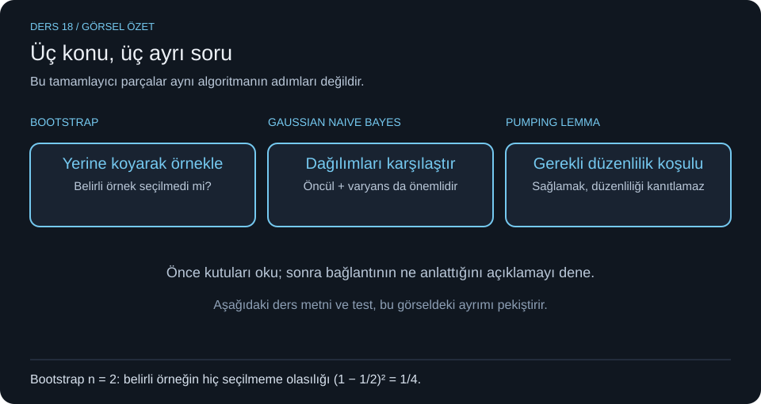
- Konu: Ana kapsam dışında görünebilen ama atlanmayan üç parça. (K03, K05, K14, K17)
- Basit açıklama: Bu fotoğraflarda başka konulara ait kısa örnekler var. Görünen sınav sorularıyla doğrudan bağları gösterilemiyor; önce ana dersleri bitir, sonra bu bölümü tanı.
- Terimler: Bootstrap = yerine koyarak örnekleme; random forest = rastgele orman; feature randomness = özellik rastgeleliği; Gaussian Naive Bayes = Gauss naif Bayes; mean = ortalama; variance = varyans; pumping lemma = pompalama lemması; regular language = düzenli dil.
- Örnekler ve hesap:
- Bootstrap: n veri arasından n kez yerine koyarak seçim yapılırsa belirli bir örneğin hiç seçilmeme olasılığı
(1-1/n)^n; büyük n için yaklaşık 0,368. Bu, tüm verilerin seçilmeme olasılığı değildir. Random forest bootstrap örneklemesi ve özellik alt kümeleriyle çeşitlilik oluşturabilir. - Gaussian Naive Bayes: Notta erkek örnekleri 175/185, ortalama 180; kadın 165/155, ortalama 160, varyans 25 verilmiş. x=172, eşit varyans ve eşit sınıf öncülleri varsayımıyla, 180'e uzaklık 8; 160'a uzaklık 12. Erkek sınıfı için Gauss yoğunluğu daha yüksektir. Notun “yakına bak” sezgisi bu varsayımlara bağlıdır; öncüller/varyanslar farklıysa yalnız yakınlık yetmez.
- Pumping lemma: Düzenli dillerin sağlaması gereken bir özellik verir. Tipik kullanım bir dilin düzenli olmadığını çelişkiyle göstermektir. “Lemmayı bir örnekte sağladı, o hâlde dil düzenlidir” sonucu çıkarılmaz. Notta
s=xyz,|s|≥pparçaları okunuyor, tam ispat yok. Ek tamamlayıcı standart biçim: düzenli L için bir p vardır; her yeterince uzun s∈L için s=xyz,|xy|≤p,|y|>0ve her i≥0 içinxy^iz∈L. Düzenli olmadığını göstermek için tüm uygun bölmelere karşı bir pompalama bozuluşu gerekir; tek bölme yetmez.
- Bootstrap: n veri arasından n kez yerine koyarak seçim yapılırsa belirli bir örneğin hiç seçilmeme olasılığı
- Sınav noktaları: Bu üç örneğin birbirinden farklı alanlar olduğunu ayır. Fotoğrafta olmayan tam ML algoritmasını veya otomata ispatını hocanın anlattığı kapsam gibi varsayma. Hesapta kullanılan varsayımları yaz.
- Hatırlama: “Bootstrap: seçilmeyen örnek; Gauss: varsayımla yoğunluk; lemma: düzenlilik için gerekli özellik.”
- Örnek soru ve çözüm: “n=2 iken belirli bir örnek iki seçimde de seçilmesin: olasılık?”
(1-1/2)^2=1/4. “172'nin erkek sınıfına yakın olması tek başına her Naive Bayes probleminde yeterli mi?” Hayır; öncüller ve dağılım parametreleri de gerekir.
5. Çıkmış soruların tam çözümleri
Çıkmış soru 1 — Beş durum, geçişleriyle çizim
Görünen soru: “5 durumlu process state diyagramını çiziniz ve transitionlarını yazınız?” (15 puan.)
Sınava yazılacak cevap: Ders 3'teki şema ve altı geçiş tablosu. New, Ready, Running, Blocked/Waiting, Exit/Terminated durumlarını; Admit, Dispatch, Time-out, Event wait, Event occurs, Release oklarını göster.
Neden doğru? Ready CPU'yu bekler, blocked henüz çalışma koşulu oluşmadığı için olay bekler. Olay bitince ready olur; dispatch ile running'e döner. Böylece “olay tamamlanması” ve “CPU verilmesi” farklı kararlar olarak gösterilir.
Seçenek yok: Bu soru çoktan seçmeli olmadığı için orijinal yanlış şıklar bulunmuyor. Aşağıdakiler yanlış cevap örnekleridir:
| Yanlış cevap | Neden yanlış? |
|---|---|
| Blocked → Running, etiketi “I/O bitti” | CPU'ya atanma adımını atlıyor |
| Running → Blocked, etiketi “time-out” | CPU süresi dolması olay beklemek değildir; ready olmalı |
| Ready → Blocked, etiketi “disk isteği” | Temel beş durum modelinde isteği çalışmakta olan süreç yapar |
| Yalnızca durum isimleri | Soru geçişleri de istiyor |
| Beş yerine yedi durum, açıklamasız | İstenen temel model yerine başka model çiziliyor |
Aynı mantıkta yeni soru: “P oluşturuldu, CPU aldı, disk istedi, disk bitti, CPU aldı, zaman dilimi doldu, CPU aldı ve bitti. Durum sırasını yaz.”
Çözüm: New → Ready → Running → Blocked → Ready → Running → Ready → Running → Exit.
Çıkmış soru 2 — Başlangıç 2, dört thread
Okunabilen istek: Kritik bölgeye erişim için başlangıcı 2 olan semaphore kullanılıyor. Sayaç -2, 0 ve 1 iken durum yazılacak. Sağ uç kesik olduğundan metnin son sözcükleri birebir aktarılmadı. Çözüm K18/K25'teki negatif kuyruk modeline dayanır.
| S | Sınava yazılacak yorum | Neden? |
|---|---|---|
| -2 | 2 izin sahibi içeride kabul edilir; 2 thread semafor kuyruğunda bekler; boş izin yok | Negatif büyüklük bekleyen sayısıdır; kapasite 2 doludur |
| 0 | 2 izin tutuluyor; boş izin ve kuyrukta bekleyen yok | İki izin tüketilmiş; henüz üçüncü bekleyen isteği yok |
| 1 | 1 izin tutuluyor; 1 boş izin var; bekleyen yok | Başlangıç 2'den yalnızca bir izin eksilmiş |
Dört thread bulunması, hepsinin her anda semafora başvurduğu anlamına gelmez. Örneğin S=1 iken diğer üç thread dışarıda başka iş yapıyor veya henüz başvurmamış olabilir. Tutarlı wait/signal kullanımı ve sabit kapasite varsayılır.
Yanlış cevaplar neden yanlış?
- “-2: içeride eksi iki thread”: Negatif değer insan/thread sayısı değil, bekleme kuyruğu işaretidir.
- “-2: yalnız bir thread içeride”: Başlangıç değerini 1 sanmış olur; soruda 2.
- “0: kritik bölge boş”: Tersidir; kullanılabilir izin yoktur. Boş kuyruğu boş kaynakla karıştırır.
- “1: içeride hiç kimse yok”: Bu ancak başlangıcı 1 olan, uygun binary örneğinde düşünülebilir; K=2 için bir izin kullanılıyordur.
- “4 thread varsa hep 4'ü de içeride”: Semaphore zaten eşzamanlı izin sayısını sınırlar.
Yeni soru: K=2 iken sırayla T1 wait, T2 wait, T3 wait, T1 signal gerçekleşiyor. Her adımdan sonra S?
Çözüm: 1, 0, -1, 0. Son signal T3'ün beklemesini çözer; T3 izin alabilecek şekilde uyandırılır, ama hemen CPU'da çalışması gerekmez. Son durumda iki izin tutulabilir, semafor kuyruğunda bekleyen kalmaz.
Çıkmış soru 3 — 1000 elemanı iki section ile toplama
Görünen istek: 0–499 elemanlarını bir thread, 500–999 elemanlarını ikinci thread toplasın; işler bitince genel toplam ekrana yazılsın. Dizi zaten var kabul ediliyor. 30 puan; kod tamamlama.
Yorum: “Section” sözcüğü nedeniyle OpenMP çözümü veriliyor. Fotoğrafta API adı açık görünmediğinden, bunu kesin bir alıntı değil teknik yorum olarak kabul et. Nottaki int dizi[1000] = {1,3,...,2,1}; gösteriminde ... gerçek C başlatıcısı değildir. Aşağıdaki program buna karşı derlenebilir test dizisi kullanır. Sınavda hocanın verdiği gerçek dizi varsa yalnızca başlatma satırını korursun.
#include <stdio.h>
#include <omp.h>
int main(int argc, char *argv[])
{
int dizi[1000];
/* Test verisi; sinavda verilen dizi bunun yerine kullanilir. */
for (int i = 0; i < 1000; ++i)
dizi[i] = i + 1;
long long s1 = 0;
long long s2 = 0;
omp_set_dynamic(0);
#pragma omp parallel sections num_threads(2) shared(dizi, s1, s2)
{
#pragma omp section
{
long long yerel = 0;
for (int i = 0; i < 500; ++i)
yerel += dizi[i];
s1 = yerel;
}
#pragma omp section
{
long long yerel = 0;
for (int i = 500; i < 1000; ++i)
yerel += dizi[i];
s2 = yerel;
}
} /* Paralel bolge biter; tum thread'ler tamamlanmis olur. */
long long toplam = s1 + s2;
printf("Toplam = %lld\n", toplam);
return 0;
}
Satırların mantığı:
- Dizi ortak okunur. Her section'ın
iveyereldeğişkenleri kendi bloğunda tanımlanır. - Bir section yalnızca
s1'e, diğeri yalnızcas2'ye yazar. Aynı toplama değişkenine yarışarak yazmazlar. parallel sectionsbir thread ekibi kurup section bloklarını dağıtır.num_threads(2)iki thread talep eder;omp_set_dynamic(0)dinamik küçültmeyi kapatır. Çalışma zamanı/ortam sınırları ayrıca geçerlidir.- Hangi section'ı hangi thread numarasının yürüteceği belirtilmemiştir. “İlk section kesin thread 0, ikinci kesin thread 1” yazma. Standart section dağıtımını uygulamaya bırakır; bölümün farklı thread kimliklerine sabitlenmesi ayrı bir gereksinimdir. Sorudaki iki section ile iş paylaşımı için tipik sınav çözümü budur. OpenMP sections.
- Paralel bölge sonundaki bekleme tamamlanmadan ana akış dışarı çıkmaz. Bu nedenle toplam iki kısmi sonuç hazır olduktan sonra yazılır. Son kısımdaki tek
printf, sonucu bir kez yazdırır. long longara toplamın darinttaşması riskini azaltır; verilen test aralığında sonuç 500500'dür. Her olası veri büyüklüğü için sınırsız taşma garantisi değildir.
Somut aralık kontrolü: 0–499'da 499-0+1=500, 500–999'da 999-500+1=500 eleman var. Test dizisi 1…1000 için s1=125250, s2=375250, toplam=500500. Fotoğrafta gerçek dizinin tüm değerleri bulunmadığından orijinal sorunun sayısal toplamı hesaplanamaz; istenen programdır.
Yanlış kodlar neden yanlış?
| Hata | Sonuç |
|---|---|
İlk döngü i<=500, ikinci i=500 |
500. indeks iki kez toplanır |
İkinci döngü i<=1000 |
dizi[1000] sınır dışıdır |
s1 veya s2 başlatılmamış |
Belirsiz başlangıç değeriyle toplama |
İki section da ortak toplam += ... yapıyor |
Eşzamanlı güncelleme yarışı |
| Yazdırma bir section'ın içinde | Diğer hesap tamamlanmamış olabilir |
#pragma omp parallel var, sections yok |
Her thread bütün bloğu yürütebilir; iş bölümü kurulmaz |
| Kodu OpenMP desteği olmadan derlemek | Pragma'lar paralel yürütmeyi sağlamayabilir |
Gerçek başlatıcıda ... yazmak |
Geçerli dizi başlatıcısı değildir |
Derleme örneği (ek bilgi): OpenMP destekli GCC ile gcc -std=c11 -fopenmp cozum.c -o cozum; MSVC'de uygun OpenMP derleme seçeneği gerekir. Bu çalışma ortamında GCC/Clang/MSVC komutu bulunmadı; bu yüzden kodun burada derlenip çalıştırıldığı iddia edilmiyor. Aralıklar ve ara toplamlar ayrıca hesapla doğrulandı.
Yeni soru: 12 elemanı 3 section'a böl. Her section 4 eleman toplasın. Hangi aralıklar?
Çözüm: [0,4), [4,8), [8,12). Üç ayrı ara toplam ve paralel bölgeden sonra tek bir birleştirme. reduction başka bir çözüm yaklaşımıdır; fakat soru özellikle section istiyorsa onu değiştirmeden kullan.
6. Karıştırılan kavramlar: hızlı karşılaştırma
| Kavram çifti | Temel fark | Kontrol sorusu |
|---|---|---|
| Program / process | Saklanan tarif / durum ve kaynaklarıyla yürütme örneği | “PID ve anlık durum var mı?” |
| Process / thread | Kaynak/adres alanı kabı / içindeki yürütme akışı | “Kim aynı belleği paylaşıyor?” |
| Ready / blocked | CPU bekler / olay bekler | “CPU verilse hemen çalışabilir mi?” |
| Blocked / suspended | Olay engeli / askıya alınma | “Olay bitince belleğe de dönmüş olur mu?” |
| PC / PID | Komut konumu / süreç kimliği | “Nerede mi, kim mi?” |
| PCB / PC | Süreç kayıt yapısı / bu yapıdaki yürütme konum bilgisi | “Bütün kayıt mı, tek alan mı?” |
| Scheduler / dispatcher | Sonraki işi seçer / CPU'yu devreder | “Seçim mi, devir mi?” |
| Concurrency / parallelism | Birlikte ilerleme / aynı anda yürütme | “Tek çekirdekte de olabilir mi?” |
| Data / task parallelism | Aynı işlemin veri bölümleri / farklı görevler | “İşlem mi, veri mi değişti?” |
| Mutex / semaphore | Sahipli tek kilit / izin sayacı | “Kapasite 1 olmak zorunda mı?” |
| Atomic / inline | Bölünmez etki / çağrı yerinde genişletme yaklaşımı | “Inline yarış garantisini çözer mi?” |
| Barrier / mutual exclusion | Herkesin tamamlamasını bekleme / aynı anda giriş engeli | “Bitişi mi, girişi mi kontrol ediyor?” |
| Deadlock / starvation | Karşılıklı bekleyenler / sıra bulamayan iş | “Başkaları ilerliyor mu?” |
| ULT / KLT | Kütüphane yönetimi / OS'nin bildiği thread | “OS ayrı ayrı zamanlıyor mu?” |
| User/kernel / 32/64 bit | Yetki düzeyi / mimari-veri genişliği | “Biri diğerini belirler mi?” |
| Authentication / authorization | Kimlik doğrulama / yetki kararı | “Kimsin mi, ne yapabilirsin mi?” |
| Orphan / zombie | Canlı çocuk, ebeveyni yok / bitmiş çocuk, kaydı bekliyor | “Çocuk gerçekten bitmiş mi?” |
7. Önemli kavramlar sözlüğü
| İngilizce | Türkçe ve tek cümlelik anlam |
|---|---|
| Accounting | Kaynak kullanımının kaydını tutma |
| Admit | Yeni süreci hazır işlere kabul etme |
| Address space | Sürecin adresleyebildiği bellek alanı |
| API | Yazılımların hizmet isteme arayüzü |
| Atomic | Diğer akışlara göre bölünmez etki gösteren |
| Barrier | Katılan işlerin belirli noktayı tamamlamasını bekleme |
| Blocked | Bir olay/kaynak koşulu nedeniyle ilerleyemeyen |
| Context | Yürütmeye devam etmek için gereken anlık durum |
| Context switch | Bir yürütme bağlamından diğerine geçiş |
| Critical section | Paylaşılan durum üzerinde korunması gereken kod bölgesi |
| Dispatch | Hazır işe CPU'yu verme |
| Event | Beklenebilen/geldiğinde süreci hazır kılabilen olay |
| Handle | OS nesnesine erişim tanıtıcısı |
| Heap | Dinamik bellek ayırma alanı |
| I/O | Giriş/çıkış; örneğin disk okuma |
| IPC | Süreçler arası iletişim |
| Kernel | OS'nin temel yönetim çekirdeği |
| Lock | Korunan bölgeye giriş denetimi |
| LIFO | Son giren ilk çıkar |
| Mutual exclusion | Aynı kritik bölgeye eşzamanlı tek giriş sağlama |
| Operand / opcode | İşlenen değer/konum / yapılacak işlem |
| Permit | Semaphore tarafından verilen giriş/kaynak izni |
| PID | Süreç kimliği |
| PCB | Sürecin kimlik, durum, bağlam ve kontrol kaydı |
| Program counter | Yürütmenin komut konumu bilgisi |
| Race condition | Sonucun denetlenmeyen işlem sırasına bağlı olması |
| Ready | Çalışmaya uygun fakat CPU bekleyen |
| Register | İşlemci içindeki hızlı yazmaç |
| Resource | Kullanımına erişim yönetilen kaynak |
| Resume | Askıdaki yürütmeyi yeniden etkinleştirme |
| Running | Komutları CPU'da yürütülmekte olan |
| Scheduler | Yürütülecek işi seçen mekanizma |
| Section | OpenMP'de ekibe dağıtılacak iş bloğu |
| Semaphore | İzinleri ve gerekirse bekleyenleri yöneten eşzamanlama aracı |
| Signal / wait | İzin bırakma/uyandırma / izin alma-bekleme |
| Stack | Çağrı çerçeveleri ve otomatik yerel verilerin yığını |
| Suspend | Yürütmeyi sonlandırmadan askıya alma |
| Swapping | Süreç/bellek içeriğini RAM ile disk arasında taşıma |
| Thread | Süreç içindeki yürütme akışı |
| Time-out | Verilen zaman diliminin dolması |
| TLS | Thread'e özel saklama alanı |
| Transition | Durumlar arasındaki geçiş |
8. Mini deneme — 50 dakika, 100 puan
Bu dağılım çalışma amacıyla hazırlanmıştır, orijinal sınavın kalan sorularının tahmini değildir. Soru 1–3 biçimi görünen sınava; diğerleri notlardaki karşılaştırma ve hesaplara dayanır. Önce cevap anahtarını kapat.
- (15 puan, 6 dk) Beş durumlu süreç diyagramını çiz, altı geçişi adlandır. Disk okuması tamamlanan sürecin neden doğrudan running olmadığını açıkla.
- (15 puan, 6 dk) Altı thread, başlangıcı K=3 olan işaretli semaphore kullanıyor. S=-2, S=0 ve S=2 için izin sahibi, boş izin ve bekleyen sayısını yaz. Ardından S=-2 iken bir signal'ın sonucu nedir?
- (30 puan, 15 dk) 1000 elemanlı hazır bir dizinin çift indekslerini bir section, tek indekslerini başka section toplasın; sonuçlar tamamlandıktan sonra genel toplam bir kez yazılsın. OpenMP kodunu yaz.
- (10 puan, 5 dk) Aynı süreçteki iki thread için aşağıdakileri ortak/özel ayır: kod, heap, global sayaç, PC, register bağlamı, stack.
x++ifadesini tek başına kilitsiz kullanmanın neden riskli olduğunu açıkla. - (10 puan, 5 dk) 8 ULT'nin 1 KLT'ye bağlandığı sistemde 4 çekirdek var. Paralellik ve bloklayan çağrı etkisini açıkla. One-to-one'a geçilince ne değişebilir?
- (10 puan, 5 dk) Her birini sınıflandır: (a) T1 A'yı tutup B'yi, T2 B'yi tutup A'yı bekliyor. (b) T3'e sürekli sıra gelmiyor, başkaları çalışıyor. (c) İki thread ortak sayacı okuyup aynı artırılmış değeri yazıyor. Ayrıca kimlik/yetki ayrımını örnekle.
- (10 puan, 8 dk) (a) AX=3F2Ah için AH/AL? (b) Gerçek kip 1234:0010 fiziksel adresi? (c) Fetch'ten sonraki adım? (d) Bir boş izin varken “kritik bölge tamamen boş” denebilir mi? (e)
GetCurrentProcessorNumberPID mi verir?
Cevap anahtarı ve çözüm ölçütleri
1: Ders 3'teki beş durum ve altı ok. Puan önerisi: durumlar 5, geçişler 6, olay/CPU ayrımı açıklaması 4. I/O tamamlanması bekleme koşulunu kaldırır; scheduler/dispatch ile CPU alınır.
2: K=3 için S=-2: 3 izin sahibi, 0 boş, 2 bekleyen. S=0: 3,0,0. S=2: 1,2,0. Signal sonrası S=-1; bir bekleyen uyandırılır, bir bekleyen kalır. Tutulan izin sayısı devir sonrası 3 olabilir. Puan: her satır 4, signal 3. Eksi sayıyı içerideki kişi sayısı sanma.
3: Aşağıdaki fonksiyon hazır diziyi alır. Tam programda stdio.h/omp.h bulunur ve main bu fonksiyonu çağırır. num_threads(2) iki thread isteğidir; section kimlik eşlemesi sabit değildir.
#include <stdio.h>
#include <omp.h>
void cift_tek_topla(const int dizi[1000])
{
long long cift = 0, tek = 0;
omp_set_dynamic(0);
#pragma omp parallel sections num_threads(2) shared(dizi, cift, tek)
{
#pragma omp section
{
for (int i = 0; i < 1000; i += 2)
cift += dizi[i];
}
#pragma omp section
{
for (int i = 1; i < 1000; i += 2)
tek += dizi[i];
}
}
printf("Toplam = %lld\n", cift + tek);
}
Çift indeks 0,2,…,998; tek indeks 1,3,…,999. Her eleman tam bir kez, sınır aşılmadan kullanılır. Tek yazarlı ara toplamlar, beklemeden sonra birleştirme vardır. Puan önerisi: section yapısı 8, indeksler 8, başlatma/paylaşım 6, tamamlanma ve tek çıktı 6, C sözdizimi 2.
4: Ortak: kod, heap, global sayaç. Özel: PC, register bağlamı, stack. x++ oku–değiştir–yaz adımlarında kayıp güncellemeye yol açabilir. Altı ayrım 6 puan; yarış açıklaması 4.
5: Many-to-one: tek kernel bağlamı bu 8 ULT'yi dört çekirdeğe aynı anda dağıtamaz; bloklayan çağrı grubu durdurabilir. One-to-one: ayrı KLT'lerle paralellik ve diğerlerinin ilerlemesi mümkün; ek yönetim maliyeti vardır. Çekirdeklerin ve işin uygunluğu gerekir; “kesin 8 kat hız” denmez. Her açıklama grubu 5 puan.
6: (a) deadlock; (b) starvation; (c) race condition/kayıp güncelleme. Kimlik: giriş yapanın kimliği; yetki: hangi kaydı düzenleyebildiği. Üç sınıflama 6, kimlik/yetki 4 puan. Livelock için aktif ama sonuçsuz tekrar gerekirdi.
7: (a) AH=3Fh, AL=2Ah. (b) 12350h. (c) Decode. (d) Hayır; kapasite örneğin 2 ise bir izin kullanılıyor olabilir. (e) Hayır; çağrı anındaki işlemci numarası. Her alt soru 2 puan.
Ek kısa soru bankası
- Soru: Süreç tablosunda PID var, PC yok. Kaldığı yerden devam için yeterli mi? Cevap: Hayır; PC/register gibi bağlam bilgisi gerekir.
- Soru: Blocked/Suspend'de olay bitiyor; sıradaki durum? Cevap: Ready/Suspend; tekrar etkinleştirilirse Ready.
- Soru: Authentication başarılı, kullanıcının yetkisiz dosyayı silmesi engellenmiyor. Cevap: Authorization kontrolü eksik.
- Soru: İki thread farklı dizileri aynı toplama algoritmasıyla işliyor. Cevap: Veri paralelliği örneği olabilir; yalnız thread sayısıyla tür belirlenmez, yapılan iş/veri ayrımı incelenir.
- Soru: ULT kütüphanesi adıyla kernel eşlemesi kesin anlaşılır mı? Cevap: Hayır; API ve uygulama/eşleme ayrı kavramlardır.
- Soru: Mutex açıldıktan sonra diğer thread kesin anında CPU alır mı? Cevap: Hayır; kilit kullanılabilirliği ve zamanlama ayrı konulardır.
- Soru: 1000 eleman için
[0,499)ve[500,1000)yeterli mi? Cevap: Hayır; 499. indeks eksik. İlk aralık[0,500)olmalı. - Soru: Örtük bariyer ile mutex'in görevi aynı mı? Cevap: Hayır; biri tamamlanmayı bekler, diğeri eşzamanlı girişi dışlar.
9. Sınavdan önce okunacak kısa tekrar
- Process yalnız running değildir; ready ve blocked iken de vardır. Program pasif tarif, process yürütme örneğidir.
- Beş durum: New, Ready, Running, Blocked, Exit. Altı ok: admit, dispatch, time-out, event wait, event occurs, release.
- Ready CPU; blocked olay bekler. I/O bitmesi blocked→ready'dir.
- PCB sürecin kaydıdır; PID kimlik, PC komut konumu. Context switch: kaydet–güncelle–seç–yükle.
- Suspended ile blocked aynı değildir. Askıda olay bitse ready/suspend olunur.
- Thread'ler kod/veri/heap/dosyaları paylaşır; PC/register/stack ayrı olur. Paylaşım hem kolaylık hem yarış riski getirir.
- Concurrency tek çekirdekte mümkündür; parallelism eşzamanlı yürütme ister. Veri paralelliğinde aynı işlem veri parçalarına uygulanır.
x++tek satır olsa da atomik olmak zorunda değildir. Koruma oku–değiştir–yazın tamamını kapsar.- Dersin semaphore modeli: S>0 boş izin, S=0 izin yok/kuyruk yok, S<0 ise -S bekleyen. İçerideki sayıyı yorumlamak için başlangıç K'yı kullan.
- K=2: S=-2 → 2 izin sahibi+2 bekleyen; S=0 → 2 izin sahibi; S=1 → 1 izin sahibi+1 boş izin.
- Mutex tek sahipli kilit; counting semaphore çoklu izin sayacı. Kapasite 2, tek girişli mutual exclusion değildir.
- Dizi sorusu: 0≤i<500, 500≤i<1000. Ara toplamları sıfırla, tek yazarlı tut, herkes bitince birleştir.
parallel sections, ikisection; printf dışarıda. Hangi thread'in hangi section'ı aldığı sabit varsayılmaz.- Many-to-one: tek KLT sınırlaması; one-to-one: ayrı kernel zamanlaması. Pthreads adı tek başına ULT demek değildir.
- Deadlock bekleme döngüsü; livelock aktif ama sonuçsuz; starvation bir işe sıra gelmemesi.
- Fetch–Decode–Execute. AL/AX/EAX/RAX=8/16/32/64 bit. Gerçek kip adres=segment×10h+offset.
- Authentication “kimsin”, authorization “neye iznin var”. Kernel/user yetki ayrımı, 32/64 mimari ayrımıdır.
kill -9 PIDotomatik çocuk ağacı sonlandırmaz; orphan ile zombie farklıdır.
Son kontrol: Diyagramı bakmadan çiz, K=2 için 4 wait'i hesapla, iki section'lı kodu yaz. Üçünü gerekçelendirerek yapamıyorsan kısa özeti ezberlemek yerine ilgili dersi tekrar çöz.
10. Kaynak envanteri ve kapsama karşı kontrol
Aşağıdaki tablo 26 not fotoğrafının tamamının görsel incelemesinden çıkarılmıştır. Dosya adları kronolojik ders sırası kabul edilmedi. Her satırdaki ana içerik yukarıdaki derslerde karşılandı; tekrarlar birleştirildi.
| Kod | Kaynak dosya | Görünen içerik / rehber karşılığı |
|---|---|---|
| K01 | WhatApp Image 2026-10-18 at 16.21.17.jpeg |
Creation/termination listesi, PID/PCB başlatma, native/bitlik, Notepad 10 sn ödevi, kill/zombie genellemeleri, askı şekli → Ders 5, 15 |
| K02 | WhatsA Image 2026-10-18 at 16.21.16.jpeg |
Yan duran sayfa; Notepad/WordPad, process bellek bölümleri, beş durum, PCB/context switch → Ders 2–4; editör farkı aşağıda |
| K03 | WhatsApage 2026-10-18 at 16.21.19.jpeg |
Gauss boy örneği; parent/child, swapping, termination, thread stack/main → Ders 5–6, 18 |
| K04 | WhatsApp Ige 2026-10-18 at 16.21.18.jpeg |
Register genişlikleri, real/protected/long ve user/kernel, OS hedef/hizmetleri, thunk → Ders 1, 14–15; thunk aşağıda |
| K05 | WhatsApp Image 20218 at 16.21.18.jpeg |
Bootstrap formülü, multicore güçlükleri, veri/görev paralelliği, dört süreç/thread şekli, ULT/KLT → Ders 6–7, 11, 18 |
| K06 | WhatsApp Image 2026-1-18 at 16.21.17.jpeg |
PCB, thread tanımı/faydaları, eşleme modelleri, OpenProcess, GetProcessVersion, işlemci numarası, WOW64 → Ders 4, 6, 11, 15 |
| K07 | WhatsApp Image 2026-10 16.21.17.jpeg |
Bilgisayar/OS/shell, BIOS/MBR, Bash/Explorer/GUI, shift, CPU/FPU/RAM → Ders 1, 13–14 |
| K08 | WhatsApp Image 2026-10- at 16.21.17.jpeg |
Critical section, deadlock, livelock, mutual exclusion, race, starvation, echo → Ders 8, 12 |
| K09 | WhatsApp Image 2026-10-18 a1.18.jpeg |
Tarayıcı multiprocess/izolasyon/sızıntı, authentication/authorization, RBAC/ABAC/ACL, katmanlar, session/token/MFA/OAuth → Ders 16 |
| K10 | WhatsApp Image 2026-10-18 a16.21.16.jpeg |
AX/AH/AL/EAX, bit genişlikleri, IP, user/kernel, kaynak ve OS hizmetleri → Ders 1, 13–14 |
| K11 | WhatsApp Image 2026-10-18 a16.21.17.jpeg |
Bus, fetch/decode/execute şekli, DOS komut döngüsü, running, terminal/console, kimlik/yetki → Ders 1, 3, 13, 16 |
| K12 | WhatsApp Image 2026-10-18 a16.21.18.jpeg |
BIOS/POST/MBR, thread/fiber, bus, opcode, register/segment/stack/IP, run–execute → Ders 13–14; K21 ile aynı sayfa |
| K13 | WhatsApp Image 2026-10-18 at 11.18.jpeg |
Process tanımı/yönetimi/özellikleri, dispatcher, beş durum şekli → Ders 2–4 |
| K14 | WhatsApp Image 2026-10-18 at 16..16.jpeg |
Concurrency, atomic/critical, ilerleme sorunları, inline iddiası → Ders 8, 12 |
| K15 | WhatsApp Image 2026-10-18 at 16..17.jpeg |
Multicore güçlükleri, paralellik/concurrency çizimleri, pure ULT/KLT/hybrid, avantaj/dezavantaj, concurrency ilkeleri → Ders 7, 11–12 |
| K16 | WhatsApp Image 2026-10-18 at 16.21.16.jpeg |
Beş durumun İngilizce tanımları, altı transition, process table, PCB, context switch başlangıcı → Ders 3–4 |
| K17 | WhatsApp Image 2026-10-18 at 16.21.9.jpeg |
GetModuleBaseName, sistem süreç adları, DWORD/QWORD, pumping lemma parçası → Ders 14–15, 18; süreç adları aşağıda |
| K18 | WhatsApp Image 2026-10-18 at 16.2118.jpeg |
Echo paylaşımlı veri/kilit, sayaç yarışı adım tabloları, semaphore negatif/sıfır/pozitif, mutex → Ders 8–9 |
| K19 | WhatsApp Image 2026-10-18 at 16.218.jpeg |
DOS debug/assembly, MOV/INT/INC/DEC/CMP/JNZ, register ayrımı, byte/nibble/DWORD → Ders 13–14 |
| K20 | WhatsApp Image 2026-10-18 at 161.18.jpeg |
OS ana alanları, gerçek adres ödevi, uni/multi-programming/processing/tasking/threading/hyperthreading, network OS → Ders 1, 7, 14 |
| K21 | WhatsApp Image 2026-10-18 at 1617.jpeg |
K12'deki sayfanın daha geniş fotoğrafı; aynı içerik → Ders 13–14 |
| K22 | WhatsApp Image 2026-10-18 at.21.19.jpeg |
Single/multithread bellek şekilleri; user/kernel thread çizimi, thread context/stack, suspend/terminate etkisi → Ders 6, 11 |
| K23 | WhatsApp Image 2026-10-1at 16.21.19.jpeg |
Swap/pagefile, suspension nedenleri, termination listesi, thread tanımı → Ders 5–6 |
| K24 | WhatsApp Image 2026-10-1t 16.21.17.jpeg |
Thread library soruları, POSIX/Windows/Java, ULT/KLT avantaj/dezavantaj, spoofing/DNS/IP/ARP → Ders 11, 17 |
| K25 | WhatsApp Image 26-10-18 at 16.21.16.jpeg |
Yan duran kısa semaphore sayfası; negatif/sıfır/pozitif sayaç → Ders 9 |
| K26 | WhatsApp Image026-10-18 at 16.21.18.jpeg |
Thread faydaları, thread'e ait durum/context/stack/storage, ortak process kaynakları, suspend/terminate → Ders 6 |
| Sınav | sinavkagidi.jpeg |
Görünen üç açık uçlu soru → Bölüm 5 |
Kısa ayrıntılar da kaybolmasın
- Notepad–WordPad: Nottaki amaç düz metin ile biçimli metni ayırmak. Notepad düz metin; WordPad geleneksel olarak RTF gibi biçimlendirilmiş metin örneğidir. Font/stil bilgisinin saklanması farkını bil; güncel bir Windows sürümünde bu uygulamanın kurulu olduğu varsayılmadı.
- Thunk: Farklı çağrı düzenleri/arayüzler veya mimari bağlamlar arasında uyarlama yapan ara kod; sadece “16→32 bit, niceliği değil niteliği değiştirmek” diye tanımlamak eksik. Düşük öncelikli tamamlayıcı kavram.
- Sistem süreç adları: K17'de System (notta PID=4 örneği),
smss.exe,csrss.exe,lsass.exeanılıyor. Çalışma amacıyla System=çekirdek/sistem işleri; smss=oturum yöneticisi; csrss=istemci/sunucu çalışma zamanı alt sistemi; lsass=yerel güvenlik yetkilisi olarak ayır. PID=4 gözlemi her OS'deki bütün sistem süreçlerinin kimliği değildir. “Csrss bütün control panel işlemlerini yönetir” gibi geniş tanımlara dayanma. - Nibble: 4 bit; 1 byte iki nibble'dır. AX'teki AH/AL ise nibble değil, ayrı 8 bit byte'lardır.
- Hata dönüşleri: Nottaki “error 0=başarılı” ifadesi tüm API'lere uygulanmaz. Bazı işlevler 0 başarı kodu kullanır; birçok Win32 BOOL işlevinde sıfır başarısızlıktır. Her API sözleşmesi farklı olabilir; Ders 15'te örnek verildi.
- ROM/FPU: ROM kalıcı/kolay değişmeyen firmware saklama kavramı; FPU floating-point unit (kayan nokta birimi). Nottaki “floating processing” yazımı yerine standart açılım kullanıldı. CPU/RAM/disk aynı şey değildir.
Düzeltmeler, ek bilgiler ve belirsizlik kaydı
Notlardan korunan çekirdek: Beş durum ve altı geçişin adları, PCB'nin üç bilgi grubu, askının iki ek durumu, thread faydalarının dört başlığı, multicore güçlükleri, üç thread eşleme modeli, negatif semaphore için kuyruk yorumu ve görünen assembly/adres örnekleri.
Notların birebir tekrarı olmayan ekler: Öğretici günlük hayat benzetmeleri; tüm yeni sorular/deneme ve cevaplar; semaphore için açık wait/signal sözde kodu ve formüller; OpenMP sözdizimi/çalışma zamanı ve bariyer açıklaması; örnek test dizisi; doğru/yanlış kod tabloları; gerçek C/C++ veri yarışı uyarısı; pumping lemma'nın tamamlanmış standart biçimi. Bunlar hocanın aynen yazdığı içerik gibi sunulmadı.
Düzeltilen veya sınırlandırılan ifadeler: Thread'in hiç özel belleği olmaması; kill/-9 ve çocukların otomatik ölmesi; orphan–zombie karışıklığı; S=1'in kapasiteden bağımsız “tam boş” sayılması; user/kernel ile 32/64 bitin aynı sayılması; dispatcher'ın tek bir yüksek öncelikli thread olarak tanımı; 32 bit=zorunlu 2 GB; long mode'da bütün segmentlerin yok sayılması; sabit swap/pagefile boyutu; bütün OS'lerin POSIX olması; inline=atomik veya sabit hız katsayısı; authentication–OAuth karışıklığı; ters DNS/RARP'ın genel spoofing çözümü sayılması.
Uydurulmayanlar: Sınav fotoğrafının kesik sağ ucu, ikinci sorunun görünmeyen puanı, orijinal dizinin belirtilmeyen tüm elemanları, sonraki sınav soruları, notların kesik üst satırları ve belirsiz tarih/ders sırası.
Kontrol sonucu: 26 kaynak satırındaki ana konular derslerle eşleştirildi; yinelenen sayfa çift sayılmadı. Diyagramın altı geçişi kaynak şekillerle, semafor yorumu K18/K25'teki kuyruk anlatımıyla ve başlangıç 2 bilgisiyle karşılaştırıldı. Dizi aralıklarının her elemanı bir kez kapsaması ve örnek toplamlar bağımsız hesapla kontrol edildi. Kod ortamda C/OpenMP derleyicisi bulunmadığından derlenmedi; çalışma testi yapıldığı iddia edilmiyor.
11. Birlikte başlayacağımız ilk ders
Önce Ders 1–2 ile başla, ardından hemen Ders 3'e geç. Donanım ayrıntılarının tümünü öğrenmeyi bekleme: CPU'nun iş yaptığı, OS'nin kaynakları yönettiği ve process'in beklerken de var olduğu fikri ilk diyagram için yeterlidir.
İlk kısa dersimiz üç soruyla ilerleyebilir:
- Bir editör diskte dururken program mı, process mi?
- Editör açılmış fakat klavye girdisi beklerken hâlâ process mi?
- Girdi geldiğinde neden doğrudan running değil de önce ready oluyor?
Bu üçünün gerekçesini kurduğunda diyagramı ezberlemek yerine olaylardan çıkarabilirsin. Sonra ayrı kısa dersler hâlinde PCB → thread belleği → concurrency/parallelism → yarış → semaphore → iki section'lı kod sırasıyla ilerleriz.